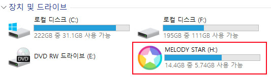
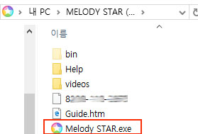

<!DOCTYPE HTML PUBLIC "-//W3C//DTD HTML 4.01 Transitional//EN"
"http://www.w3.org/TR/html4/loose.dtd">
<html>
<head>
<meta http-equiv="Content-Type" content="text/html; charset=euc-kr">
<!-- TemplateBeginEditable name="doctitle" -->
<title>무제 문서</title>
<!-- TemplateEndEditable -->
<!-- TemplateBeginEditable name="head" -->
<!-- TemplateEndEditable -->
</head>

<body>
          <p>&nbsp;</p><center>
          <p>&nbsp;&nbsp;&nbsp;&nbsp;</p>
          <p>&nbsp;</p>
          <p>&nbsp;&nbsp;&nbsp;&nbsp;※ 멜로디스타는 인터넷이 연결되어 있는 PC에서 실행시 자동업데이트 됩니다.</p>
          <p>&nbsp;&nbsp;&nbsp;&nbsp;※ PC에 ‘Avast, Norton, McAfee' 등 외국 백신프로그램이 실행되어 있다면 종료한 후에 USB를 꽂아주시기 바랍니다. </p>
          <p>&nbsp;&nbsp;&nbsp;&nbsp;&nbsp;&nbsp;(외국 백신프로그램은 멜로디스타.exe 파일을 바이러스로 오류 탐지하여 삭제 될 수 있습니다.)</p>
          <p>※ 키락(파란 USB)1개는 고유번호를 지닌 제품 하나를 의미하기 때문에 분실되면 재발급이 불가능하오니, 분실되지 않도록 주의하시기 바랍니다. </p>
          </center>
  &nbsp;</p>
          <p>&nbsp;</p>
          <hr>
          <p>&nbsp;</p>
          <p>★ <strong>프로그램 실행</strong>&nbsp;</p>
          <p>&nbsp; > 멜로디스타 USB저장소 더블클릭 → 멜로디스타 아이콘 더블클릭</p>
          <p>&nbsp;&nbsp; </p>
          <p>&nbsp;</p>
          <p>&nbsp;</p>
          <p>&nbsp;</p>
          <p><strong><a href="#1. 단축키 ">1. 단축키 </a></strong></p>
<p><strong><a href="#툴바 설명">2. 툴바 설명 </a></strong></p>
<blockquote>
            <p> <a href="#상단 툴바">2-1. 상단 툴바 </a></p>
  <p><a href="#하단 툴바">2-2. 하단 툴바 </a></p>
</blockquote>
       <p><strong><a href="#목록별 설명">3. 목록별 설명 </a></strong> </p>
<blockquote>
            <p><a href="#F9(선곡창) 화면설명">3-1. F9(선곡창) 화면설명</a> </p>
            <p><a href="#F8(예약창) 화면설명">3-2. F8(예약창) 화면설명</a> </p>
            <p><a href="#F5(애창곡창) 화면설명">3-3. F5(애창곡창) 화면설명 </a></p>
            <p><a href="#애창곡 폴더안 화면설명">3-4. 애창곡 폴더안 화면설명</a></p>
			<p><a href="#자동 연주 기능설명">3-5. 자동 연주 기능설명</a></p>
            <p><a href="#Key 조절과 템포조절 기능설명">3-6. Key 조절과 템포조절 기능설명</a></p>
            <p><a href="#Voice,트랙,오디오 기능설명">3-7. Voice,트랙, 오디오 기능설명 </a></p>
            <p> <a href="#이조설정 기능설명">3-8. 이조설정 기능설명</a></p>
            <p><a href="#악보 기능설명">3-9. 악보 기능설명</a></p>
            <p><a href="#코드 표기 변경 설정 설명">3-10. 코드 표기 변경 설정 설명</a></p>
  <p><a href="#리듬 변환 기능설명">3-11. 리듬 변환 기능설명</a></p>
  <p><a href="#연주위치 기능설명">3-12. 연주위치 기능설명</a></p>
  <p><a href="#환경설정 기능설명">3-13. 환경설정 기능설명</a></p>
</blockquote>
       <p><strong><a href="#노래 선곡하는 방법">4. 노래 선곡하는 방법 </a></strong></p>
       <p><strong><a href="#애창곡 만드는 방법">5. 애창곡 만드는 방법</a></strong>
<blockquote>
            <p><a href="#Key 변경하여 애창곡에 담기">5-1. Key 변경하여 애창곡에 담기 </a> </p>
            <p><a href="#알토폴더, 테너폴더 애창곡 만들기">5-2. 알토폴더, 테너폴더 애창곡 만들기</a> </p>
     <p><a href="#애창곡 정렬 & 곡 찾기">5-3. 애창곡 정렬 &amp; 곡 찾기 </a></p>
</blockquote>
<p><strong><a href="#악보 인쇄하는 방법">6. 악보 인쇄하는 방법 </a></strong></p>
<p><strong><a href="#정지악보 보는 방법(통기타 연주시 편리함)">7. 정지악보 보는 방법 (통기타 연주시 편리함) </a></strong></p>
<p><strong><a href="#반주MR 녹음 & 동시 녹음하는 방법(MP3) & 녹음한 파일 불러오기">8. 반주MR 녹음 &amp; 동시 녹음하는 방법(MP3) &amp; 녹음한 파일 불러오기 </a></strong></p>
<blockquote>
            <p><a href="#반주MR 녹음">8-1. 반주MR 녹음 </a> </p>
            <p><a href="#동시 녹음하는 방법(MP3)">8-2. 동시 녹음하는 방법(MP3) </a> </p>
            <p><a href="#녹음한 파일 불러오기">8-3. 녹음한 파일 불러오기 </a></p>
</blockquote>
<p><strong><a href="#알토&amp;테너 합주하는 방법">9. 알토&amp;테너 합주하는 방법 </a></strong></p>
<p><strong><a href="#색소폰 악보(이조)로 설정하는 방법">10. 색소폰 악보(이조)로 설정하는 방법</a></strong></p>
<p><strong><a href="#드럼&베이스 악보 설정하는 방법 및 드럼악보 표기 확인">11. 드럼&amp;베이스 악보 설정하는 방법 및 드럼악보 표기 확인 </a></strong></p>
<p><strong><a href="#가수별로 앨범 만드는 방법(애창곡 만들기)">12. 가수별로 앨범 만드는 방법(애창곡 만들기) </a></strong></p>
<p><strong><a href="#만들어 놓은 애창곡에서 원하는 곡만 연주하는 방법">13. 만들어 놓은 애창곡에서 원하는 곡만 연주하는 방법 </a></strong></p>
<p><strong><a href="#곡마다 개별적으로 저장하는 방법">14. 곡마다 개별적으로 저장하는 방법 </a></strong></p>
<p><strong><a href="#통기타 연주시 카포 꼈을 때 수동이조로 악보 변환하는 방법">15. 통기타 연주시 카포 꼈을 때 수동이조로 악보 변환하는 방법 </a></strong></p>
<p><strong><a href="#예약곡(F8) 곡 순서 변경 & 미리 Key 변경하는 방법">16. 예약곡(F8) 곡 순서 변경 &amp; 미리 Key 변경하는 방법 </a></strong></p>
<p><strong><a href="#애창곡 & 사용자 저장곡 공유하는 방법">17. 애창곡 &amp; 사용자 저장곡 공유하는 방법 </a></strong></p>
<p><strong><a href="#외부모니터 연결하여 영상 또는 악보 출력하는 방법">18. 외부모니터 연결하여 영상 또는 악보 출력하는 방법 </a></strong></p>
<p><strong><a href="#외부모니터에 악보 여러 방법으로 출력하는 방법">19. 외부모니터에 악보 여러 방법으로 출력하는 방법 </a></strong></p>
<p><strong><a href="#특정 노래에 영상 지정하는 방법">20. 특정 노래에 영상 지정하는 방법 </a></strong></p>
<p><strong><a href="#PC에서 노래방모드로 보는방법">21. PC에서 노래방모드로 보는방법 </a></strong></p>
<p><strong><a href="#배경영상 추가하는 방법">22. 배경영상 추가하는 방법</a></strong></p>
<p><strong><a href="## 또는 b에 걸린 음표 색상 해제하는 방법">23. # 또는 b에 걸린 음표 색상 해제하는 방법 </a></strong></p>
<p><strong><a href="#구간 반복&한곡 반복하는 방법">24. 구간 반복&amp;한곡 반복하는 방법 </a></strong></p>
<p><strong><a href="#악보 옥타브 조정하는 방법">25. 악보 옥타브 조정하는 방법 </a></strong></p>
<p><strong><a href="#하모니카 설정하는 방법">26. 하모니카 설정하는 방법 </a></strong></p>
<p><strong><a href="#가사 및 큰자막 글꼴 변경, 크기, 위치 설정하는 방법">27. 가사 및 큰자막 글꼴 변경, 크기, 위치 설정하는 방법 </a></strong></p>
<p><strong><a href="#코드, 가사 편집 및 코드 사이즈 조절하는 방법">28. 코드, 가사 편집 및 코드 사이즈 조절하는 방법</a></strong></p>
<p><strong><a href="#뒤로 또는 앞으로 마디 이동하는 짝꿍기능 설정하는 방법">29. 뒤로 또는 앞으로 마디 이동하는 짝꿍기능 설정하는 방법 </a></strong></p>
<p><strong><a href="#신곡 추가하는 방법">30. 신곡 추가하는 방법 </a></strong></p>
<p><strong><a href="#프로그램 안전하게 사용하는 방법">31. 프로그램 안전하게 사용하는 방법 </a></strong></p>
<p><strong><a href="#저장곡 및 애창곡 저장소 위치 및 백업 방법">32. 저장곡 및 애창곡 저장소 위치 및 백업 방법 </a></strong></p>
<p><strong><a href="#문제해결 및 기타사항">33. 문제해결 및 기타사항 </a></strong></p>
<blockquote>
            <p><a href="#소리가 지글지글 거리거나 끊기는 경우">33-1. 소리가 지글지글 거리거나 끊기는 경우 </a> </p>
            <p><a href="#곡 검색시 '비정상 파일입니다'라는 멘트가 뜨는 경우">33-2. 곡 검색시 '비정상 파일입니다'라는 멘트가 뜨는 경우 </a> </p>
            <p><a href="#곡 저장한 애창곡 폴더안에 곡 수가 다른 경우">33-3. 곡 저장한 애창곡 폴더안에 곡 수가 다른 경우 </a></p>
            <p><a href="#메모리 USB를 파손 또는 분실한 경우">33-4. 메모리 USB를 파손 또는 분실한 경우 </a></p>
            <p><a href="#키락(파란USB)를 파손 또는 분실한 경우">33-5. 키락(파란USB)를 파손 또는 분실한 경우 </a></p>
            <p><a href="#갑자기 안나오는 곡이 발생하는 경우">33-6. 갑자기 안나오는 곡이 발생하는 경우 </a></p>
            <p><a href="#여러 PC에서 사용하고 싶은 경우">33-7. 여러 PC에서 사용하고 싶은 경우 </a></p>
            <p><a href="#자판이 없는 PC 또는 자판이 먹통인 경우">33-8. 자판이 없는 PC 또는 자판이 먹통인 경우 </a></p>
            <p><a href="#신곡과 수정곡에 대하여">33-9. 신곡과 수정곡에 대하여 </a></p>
</blockquote>
<blockquote>
  <p>&nbsp;</p>
</blockquote>
       <p><strong>< 윈스타 도움말 설명 > </strong></p>
       <p><strong><a name="1. 단축키"></a>1. 단축키       </strong></p>
          <blockquote></blockquote>
</blockquote>
       <p> <strong><a name="툴바 설명"></a>2. 툴바 설명 </strong> </p>
       <blockquote>
         <p><a name="상단 툴바"></a>2-1. 상단 툴바       </p>
         <blockquote>
           <p>&nbsp;</p>
           <p>① 이조악기 설정 상태 표시</p>
           <p>② 악보 1단, 2단 옥타브 설정 상태 표시</p>
           <p>③ 멜로디 뮤트 ON/OFF 표기(단축키 : M) </p>
           <p>④ 현재 연주중인 곡 번호, 노래제목, 가수, 코드, 템포 표시 </p>
           <p>⑤ 연주 중인 곡 한곡 전체 반복 ON/OFF (단축키 : Ctrl + L )</p>
           <p>⑥  다음 예약곡 표시(곡번호, 노래제목, 가수, 코드)</p>
           <p>⑦ 자동연주 항목(곡 번호순, 랜덤, 장르별...등 나누어짐) </p>
           <p>⑧ 화상키보드(클릭하면 하단으로 화상키보드 생성)</p>
           <p>⑨ 프로그램 창 최소화하여 화면을 밑으로 감춤 (단축키 : Shift + - ) </p>
           <p>⑩ 프로그램 종료 (단축키 : Alt + X)</p>
         </blockquote>
         <p> <a name="하단 툴바"></a>2-2. 하단 툴바 </p>
         <blockquote>
           <p>&nbsp;</p>
           <p>① 연주 플레이 시작 &amp; 일시 중지 / 곡 종료 / 다음 곡으로 넘어감 (단축키 : 시작&amp;정지-스페이스바 / 곡종료&amp;다음곡- Esc / 다음곡으로(바로시작)-End) </p>
           <p>② 초기화면 : 도움말, 설명서 / 악보화면 : 자막 표시 (노래제목, 가수명, 장르가 표기됨) </p>
           <p>③ 곡 검 색 : 선곡 창 띄움 (단축키 : F9) </p>
           <p><SPAN lang="EN-US"> &nbsp;&nbsp;&nbsp;예 약 곡 : 예약곡 리스트 창 띄움</SPAN> (단축키 : F8) </p>
           <p><SPAN lang="EN-US"> &nbsp;&nbsp;&nbsp;애 창 곡 : 애창곡 창 띄움</SPAN> (단축키 : F5) </p>
           <p><SPAN lang="EN-US"> &nbsp;&nbsp;&nbsp;가사보기 : 툴바 사라지면서 큰 자막으로 표기</SPAN> (단축키 : H) </p>
           <p>④ 상하버튼을 클릭하여 반음씩 key를 올리거나 내림 (단축키 : 키올림-Insert / 키내림-Delete) </p>
           <p><SPAN lang="EN-US"> &nbsp;&nbsp;&nbsp;원  키 : 원래 key로 바뀜</SPAN> (단축키 : Home) </p>
           <p><SPAN lang="EN-US"> &nbsp;&nbsp;&nbsp;남자키 : 남자 key로 바뀜</SPAN> (단축키 : Page Up) </p>
           <p><SPAN lang="EN-US"> &nbsp;&nbsp;&nbsp;여자키 : 여자 key로 바뀜</SPAN> (단축키 : Page Down) </p>
           <p>⑤ 상하버튼을 클릭하여 템포를 빠르게 하거나 느리게 조절 (단축키 : 빠르게- ↑ / 느리게- ↓ ) </p>
           <p>⑥ <SPAN lang="EN-US">VOICE </SPAN><SPAN lang="EN-US">: 악보 밑에 가사가 음계로 바뀌면서 음계를 불러주는 기능</SPAN> (단축키 : Alt + V) </p>
           <p><SPAN lang="EN-US"> </SPAN><SPAN lang="EN-US">&nbsp;&nbsp;&nbsp;TRACK </SPAN><SPAN lang="EN-US">: 중요 악기들이 보여지면서 목록별 볼륨 조절하는 기능</SPAN> (단축키 : Alt + T) </p>
           <p><SPAN lang="EN-US"> </SPAN><SPAN lang="EN-US">&nbsp;&nbsp;&nbsp;AUDIO : </SPAN>저음, 중저음, 고음, 중고음, 리버브, 코러스, 딜레이 등 효과를 조절 및 동시 녹음되는 기능 (단축키 : Alt + E) </p>
           <p>⑦ 이 조 설 정 : 색소폰, 트럼펫, 클라리넷 등 악기에 맞게 이조하는 기능 (3-8 항목 참고) </p>
           <p><SPAN lang="EN-US"> &nbsp;&nbsp;&nbsp;악&nbsp;&nbsp;&nbsp;&nbsp;&nbsp; 보 : 옥타브 조정, 멜로디&amp;간주악보 설정, 악보와 관련된 세부적인 설정을 하는 기능</SPAN> (3-9 항목 참고) </p>
           <p><SPAN lang="EN-US">&nbsp;&nbsp;&nbsp;코&nbsp;&nbsp;&nbsp;&nbsp;&nbsp; 드 : 코드 표기 변경할 수 있는 기능 </SPAN> (3-10 항목 참고) </p>
           <p><SPAN lang="EN-US"> &nbsp;&nbsp;&nbsp;리&nbsp;&nbsp;&nbsp;&nbsp;&nbsp; 듬 : </SPAN>디스코, 차차차, 트로트, 기각기 등 리듬 삽입 기능 (3-11 항목 참고) </p>
           <p><SPAN lang="EN-US">&nbsp;&nbsp;&nbsp;위&nbsp;&nbsp;&nbsp;&nbsp;&nbsp; 치 : </SPAN>전주, 간주, 1절, 2절... 등 원하는 구간으로 이동, 구간을 지정하여 반복하는 기능 (3-12 항목 참고)</p>
           <p><SPAN lang="EN-US"> &nbsp;&nbsp;&nbsp;환 경 설 정 : 프로그램 기본 환경 설정을 변경해주는 기능 </SPAN>(3-13 항목 참고) </p>
           <p>⑧-1 메인 볼륨 : 마우스로 클릭한 상태에서 돌려주면 볼륨수치가 바뀌며 이 수치는 PC 볼륨에도 영향을 줌. (단축키 : 볼륨업 \ / 볼륨다운 =) </p>
           <p>⑧-2 보조 볼륨 : 마우스로 클릭한 상태에서 돌려주면 볼륨 수치가 바뀌며 최저 -30dB까지만 줄여지며 보조 볼륨은 PC 볼륨에 영향을 안줌. </p>
         </blockquote>
         <blockquote><blockquote>&nbsp;</blockquote>
         </blockquote>
</blockquote>
<p><strong><a name="목록별 설명"></a>3. 목록별 설명 </strong> </p>
<blockquote>
  <p><a name="F9(선곡창) 화면설명"></a>3-1. F9(선곡창) 화면설명            </p>
  <blockquote>
    <p>&nbsp;</p>
    <p>①  : 멜로디스타에서 녹음한 파일 불러옴 (단축키 : F7) </p>
    <p>&nbsp;&nbsp;&nbsp;색소폰 모음집 : 알토&amp;테너 색소폰으로 많이 연주되는 key로 설정된 곡 리스트가 보여짐</p>
    <p>&nbsp;&nbsp;&nbsp;장르별 노래 : 선택한 장르의 리스트가 보여짐 </p>
    <p>&nbsp;&nbsp;&nbsp;외국어 노래 : 일본곡 &amp; 중국곡 리스트가 보여짐</p>
    <p>② 행 사 곡 <SPAN lang="EN-US">: 행사곡 리스트가 보여짐</SPAN></p>
    <p>③ 찬송가/성가 <SPAN lang="EN-US">: </SPAN>찬송가 또는 성가를 추가한 경우에만 '찬송가/성가'버튼이 생기며 리스트가 보여짐</p>
    <p><SPAN lang="EN-US"> ④ </SPAN>제   목, 가수, 가사 <SPAN lang="EN-US">: 노래 제목 또는 곡 번호 입력하여 검색</SPAN>, 가수 이름을 입력하여 검색, 첫소절 가사를 입력하여 검색 </p>
    <p><SPAN lang="EN-US"> ⑤ </SPAN>English, 한글 : 한영 전환 <SPAN lang="EN-US"></SPAN></p>
    <p><SPAN lang="EN-US"> ⑥ </SPAN>← : 글씨 잘못 입력하였을 경우 지움.(Backspace 역할) <SPAN lang="EN-US"></SPAN></p>
    <p><SPAN lang="EN-US"> ⑦ </SPAN><span lang="EN-US">발음 확장 : 영어 제목을 한글로 검색시 좀 더 포괄적으로 검색</span></p>
    <p><SPAN lang="EN-US"> ⑧ </SPAN>선   택 <span lang="EN-US">: 선택한 곡 바로 연주 (연주중인 경우엔 예약됨)</span></p>
    <p><SPAN lang="EN-US"> ⑨ </SPAN> ' ⓟ ' : 선택한 곡 정지악보/인쇄모드로 보여짐 </p>
    <p><SPAN lang="EN-US"> ⑩ </SPAN>예   약 <span lang="EN-US">: 선곡 후 선택한 곡 예약</span></p>
    <p><SPAN lang="EN-US"> ⑪ </SPAN>신곡보기 <span lang="EN-US">: 추가한 신곡 500곡까지 리스트 보여짐</span></p>
    <p>⑫ 가상키보드<span lang="EN-US"> : 가상키보드 자판 띄우기</span></p>
    <p>
      <![if !supportEmptyParas]>
      &nbsp;
      <![endif]>
    </p>
    <p><SPAN lang="EN-US"> </SPAN>☞  OST 또는 방송 프로그램으로 검색 : 드라마&amp;영화&amp;프로그램 제목 초성으로 입력하여 검색</p>
    <p><SPAN lang="EN-US"> </SPAN>☞  팝송 검색 시 영문 입력 또는 발음나는대로 한글 초성 입력하여 검색 </p>
    <p><SPAN lang="EN-US"> </SPAN>☞  긴 제목은 초성만 입력하여도 검색되며, <SPAN lang="EN-US">짧은 제목은 자음, 모음 다 입력하여 검색하는 것이 빠름</SPAN></p>
  </blockquote>
  <p><a name="F8(예약창) 화면설명"></a>3-2. F8(예약창) 화면설명      </p>
  <blockquote>
    <p></p>
    <p><SPAN lang="EN-US">① 시</SPAN><SPAN lang="EN-US"> 작 : 선택한 곡 바로 연주</SPAN></p>
    <p>② ' ⓟ ' : 선택한 곡 정지악보/인쇄모드로 보여지게 예약함 </p>
    <p><SPAN lang="EN-US"> ③ 번째/ 곡 : 선택한 곡이 몇번째 곡인지 표시/예약곡이 전체 몇곡인지 표시 </SPAN></p>
    <p>④ 남/key/여 : 예약창에서 선택한 곡을 미리 key 조절 </p>
    <p>⑤ ▲ <SPAN lang="EN-US">: 선택한 곡 위치를 맨 위로 이동</SPAN></p>
    <p>&nbsp;&nbsp;&nbsp;△ <SPAN lang="EN-US">: 선택한 곡 위치를 하나 위로 이동</SPAN></p>
    <p>&nbsp;&nbsp;&nbsp;▽<SPAN lang="EN-US"> : 선택한 곡 위치를 하나 아래로 이동</SPAN></p>
    <p>&nbsp;&nbsp;&nbsp;▼ <SPAN lang="EN-US"> : 선택한 곡 위치를 맨 아래로 이동</SPAN></p>
    <p>⑥ 가져오기/내보내기 : 예약창 항목에 있는 곡을 다른 사용자와 공유할 수 있는 기능으로</p>
    <p><strong>&nbsp;&nbsp;&nbsp;&nbsp;&nbsp;&nbsp;&nbsp;&nbsp;&nbsp;&nbsp;&nbsp;&nbsp;&nbsp;&nbsp;&nbsp;&nbsp;&nbsp;&nbsp;&nbsp;&nbsp;내보내기</strong>를 누르면 예약곡 항목에 있는  데이터가 설정값 그대로 csv 파일로 만들어져 내보내지며, </p>
    <p><strong>&nbsp;&nbsp;&nbsp;&nbsp;&nbsp;&nbsp;&nbsp;&nbsp;&nbsp;&nbsp;&nbsp;&nbsp;&nbsp;&nbsp;&nbsp;&nbsp;&nbsp;&nbsp;&nbsp;&nbsp;가져오기</strong>를 클릭하면 공유받고자 하는 사람이 csv 파일을 불러와 공유한 사람과 같은 설정값으로 보여짐 </p>
    <p>⑦ <span lang="EN-US">전</span>체삭제 <span lang="EN-US">: 예약곡 리스트화면에 보여지는 곡 전체 삭제 </span>(바로 삭제가 안되며, 경고 표시가 뜬 후에 한번 더 클릭해야 삭제가 됨)</p>
    <p>⑧ <span lang="EN-US">삭</span><span lang="EN-US"> 제 : 선택한 곡만 예약곡 리스트에서 삭제</span></p>
    <p>⑨ 반복 재생 : 체크하면 예약창에 보여지는 리스트들이 계속 반복됨.  </p>
  </blockquote>
  <p><a name="F5(애창곡창) 화면설명"></a>3-3. F5(애창곡창) 화면설명 </p>
  <blockquote>
    <p>&nbsp;</p>
    <p>① 애창곡 검색창 : 만들어 놓은 애창곡이 많아 특정곡이 어느 애창곡 폴더에 담겨있는지 찾아줌 </p>
    <p>② 앨 범 예 약 : 선택한 애창곡 폴더 안에 있는 곡들 전체 예약</p>
    <p>&nbsp;&nbsp; 1 곡 예 약 : 선택한 앨범안에 곡 중 한곡만 선택 예약</p>
    <p>&nbsp;&nbsp;&nbsp;&nbsp;  'ⓟ '&nbsp;&nbsp;&nbsp;&nbsp; :  선택한 앨범안에 곡 중 한곡을 선택하여 정지악보모드(인쇄모드)로 보기 설정 </p>
    <p>&nbsp;&nbsp; 1 곡 연 주 : 선택한 앨범안에 곡 중 한곡만 선택하여 연주 </p>
    <p>&nbsp;&nbsp; 앨 범 연 주 : 선택한 앨범의 담아놓은 전체곡 연주 </p>
    <p>&nbsp;&nbsp; 이름바꾸기 <SPAN lang="EN-US">: 앨범명 변경</SPAN></p>
    <p><SPAN lang="EN-US"> ③ 앨 범 열 기 : 선택한 앨범을 열어 안에 담긴 곡 확인 (앨범에 담긴 곡 리스트를 확인하거나 편집 할 때 필요)</SPAN></p>
    <p>&nbsp;&nbsp; 앨범에담기 <SPAN lang="EN-US">: 연주 중인 곡을 선택한 앨범에 추가 </SPAN></p>
    <p>&nbsp;&nbsp; 예약곡담기 <SPAN lang="EN-US">: 예약곡(F8)에 있는 곡들을 앨범에 추가</SPAN></p>
    <p>&nbsp;&nbsp; 가상키보드 : 가상키보드 자판 띄우기 </p>
    <p>④ 방향화살표 : 애창곡 폴더 위치 변경 버튼 </p>
    <p>&nbsp;</p>
    <p>☞ 앨범 랜덤 연주 : 앨범을 선택 후 상단<strong> '자동연주 OFF'</strong> 항목에서 <strong>'애창곡(앨범∝)'</strong> 선택하면 </p>
    <p>&nbsp;&nbsp; 선택한 앨범안에 곡들이 랜덤으로 무한반복 연주됨. </p>
    <p>☞ 앨범 순서 연주 : 앨범을 선택 후 상단<strong> '자동연주 OFF'</strong> 항목에서 <strong>'애창곡(앨범↓)'</strong> 선택하면 </p>
    <p>&nbsp;&nbsp; 선택한 앨범안에 곡들이 순서대로 무한반복 연주됨. </p>
    <p>&nbsp; </p>
  </blockquote>
  <p> <a name="애창곡 폴더안 화면설명"></a>3-4. 애창곡 폴더안 화면설명</p>
  <blockquote>
    <p>&nbsp;</p>
    <p>① 제목순 : 제목이 가나다순으로 곡 정렬</p>
    <p>&nbsp;&nbsp; 가사순 : 가수명이 가나다순으로 곡 정렬</p>
    <p>&nbsp;&nbsp; 저장순 : 앨범에 곡 담았던 순으로 곡 정렬 </p>
    <p>&nbsp;&nbsp;&nbsp;&nbsp;&nbsp;&nbsp;&nbsp;&nbsp;※ 한 폴더에서 지정한 정렬순은 모든 애창곡 폴더에 적용되며 프로그램을 종료하여도 계속 유지됨 </p>
    <p>② 번째/곡, 남/key/여 : 선택한 곡이 몇번째 곡인지 표시/애창곡이 전체 몇곡인지 표시, 선곡전 미리 key 조절 </p>
    <p>③ ▲ : 선택한 곡 맨 위로 이동</p>
    <p>&nbsp;&nbsp;&nbsp;△ : 선택한 곡 하나 위로 이동</SPAN></p>
    <p>&nbsp;&nbsp;&nbsp;▽ : 선택한 곡 하나 아래로 이동</SPAN></p>
    <p>&nbsp;&nbsp;&nbsp;▼ : 선택한 곡 맨 아래로 이동</SPAN></p>
    <p>④ 가져오기/내보내기 : 열어본 애창곡 안에 곡을 다른 사용자와 공유할 수 있는 기능으로</p>
    <p><strong>&nbsp;&nbsp;&nbsp;&nbsp;&nbsp;&nbsp;&nbsp;&nbsp;&nbsp;&nbsp;&nbsp;&nbsp;&nbsp;&nbsp;&nbsp;&nbsp;&nbsp;&nbsp;&nbsp;&nbsp;내보내기</strong>를 누르면 현재 열려있는 애창곡 폴더 안에 데이터가 설정값 그대로 csv 파일로 만들어져 내보내지며, </p>
    <p><strong>&nbsp;&nbsp;&nbsp;&nbsp;&nbsp;&nbsp;&nbsp;&nbsp;&nbsp;&nbsp;&nbsp;&nbsp;&nbsp;&nbsp;&nbsp;&nbsp;&nbsp;&nbsp;&nbsp;&nbsp;가져오기</strong>를 클릭하면 공유받고자 하는 사람이 csv 파일을 불러와 공유한 사람과 같은 설정값으로 보여짐 </p>
    <p><SPAN lang="EN-US"> ⑤ 앨범예약 : 앨범안에 있는 모든 곡을 예약</SPAN></p>
    <p>&nbsp;&nbsp; 1곡 예약 : 앨범안에 담긴 곡들 중 선택한 곡만 예약</SPAN></p>
    <p>&nbsp;&nbsp;&nbsp;&nbsp;&nbsp; ⓟ &nbsp;&nbsp; : 선택한 곡 정지악보/인쇄모드로 보여지게 예약함</p>
    <p>&nbsp;&nbsp; 1곡 연주 : 앨범안에 담긴 곡들 중 선택한 곡만 바로 시작 (연주중인 경우엔 예약됨)</SPAN></p>
    <p>&nbsp;&nbsp; 앨범연주 : 앨범에 담긴 곡들이 순서대로 바로 연주</SPAN></p>
    <p><SPAN lang="EN-US"> ⑥ 앨 범 보 기 : 현재 위치에서 애창곡 폴더들이 보였던 화면으로 이동 </SPAN>(단축키 : Backspace) </p>
    <p>&nbsp;&nbsp; 앨범에담기 : 연주 중인 곡을 선택한 앨범에 추가</SPAN> (단축키 : * ) </p>
    <p>&nbsp;&nbsp; 예약곡담기 : 예약곡(F8)에 있는 예약곡들을 선택한 앨범에 추가 </p>
    <p>&nbsp;&nbsp; 삭  &nbsp;&nbsp;&nbsp;&nbsp;&nbsp;  제 : 앨범안에 담긴 곡들 중 선택한 곡만 삭제</SPAN> (단축키 : Delete) </p>
    <p>&nbsp;&nbsp; 전체&nbsp; 삭제 : 앨범안에 담긴 모든 곡 전체 삭제</SPAN> (한번에 삭제가 되진 않으며 정말 삭제 할 것인지 경고표기가 뜨고 한번 더 클릭해야 삭제됨) </p>
    <p>
      <![if !supportEmptyParas]>
      &nbsp;
      <![endif]>
    </p>
    <p>☞ 앨범 랜덤 연주 : 앨범을 선택 후 상단<strong> '자동연주 OFF'</strong> 항목에서 <strong>'애창곡(앨범∝)'</strong> 선택하면 </p>
    <p>&nbsp;&nbsp; 선택한 앨범안에 곡들이 랜덤으로 무한반복 연주됨. </p>
    <p>☞ 앨범 순서 연주 : 앨범을 선택 후 상단<strong> '자동연주 OFF'</strong> 항목에서 <strong>'애창곡(앨범↓)'</strong> 선택하면 </p>
    <p>&nbsp;&nbsp; 선택한 앨범안에 곡들이 순서대로 무한반복 연주됨. </p>
    <p>&nbsp;</p>
    <p><SPAN lang="EN-US"> ※ </SPAN>애창곡 만든 파일은 메모리USB → bin 폴더 → data 폴더 → ‘favorites.sqlite’ 파일 하나에 보관됩니다.</p>
    <p><SPAN lang="EN-US"> ※ 애창곡은 만들어 놓은 위치에 따라 저장된 목록이 다르게 보일 수 있습니다.</SPAN></p>
    <p><SPAN lang="EN-US"> &nbsp;&nbsp;&nbsp;만약 PC에 설치된 멜로디스타에서만 애창곡을 만들고 메모리USB에 있는 멜로디스타를 실행하면 PC에서 만든 애창곡 목록으로 안보이니 이 점 주의하여 주시기 바랍니다.</SPAN></p>
  </blockquote>
  <p> <a name="자동 연주 기능설명"></a>3-5. 자동 연주 기능설명</p>
  <blockquote>
    <p>&nbsp;</p>
    <p>&gt; 자동연주 항목 활성화 단축키 : Alt + J </p>
    <p>&gt; 화면 상단, 다음곡 위치에 콤보 박스로 표시되며 다음 예약곡이 있으면 보이지 않습니다.</p>
    <p>
  &gt; 자동 연주 중 곡검색/애창곡 등 곡을 선곡하면 해제되며,<br>
    &nbsp; '환경설정 - 자동시작 - OFF' 로 설정하였다 하더라도 무시되고 다음곡이 바로 연주됩니다. </p>
    <p>
  &gt; 번호순으로 연주시 직전에 연주한 기록이 없다면 1번 곡 부터 순서대로 연주되며,<br>
    &nbsp;&nbsp;연주한 기록이 있다면 그 곡을 기준으로 다음 번호의 곡 부터순서대로 연주됩니다.</p>
    <p>&gt; 선택한 장르에 맞는 곡이 랜덤순으로 자동으로 연주.<br>
    &nbsp;&nbsp;'애창곡' 과 '사용자 설정곡'도 만들어 놓은 곡들이 있다면 전체가 랜덤으로 재생. <br>
    &nbsp;&nbsp;'신곡연주' 곡 설치를 하였을 경우 최근에 설치된 곡 500여곡 안에서 랜덤순으로 재생됩니다. </p>
    <p>&gt; 무작위로 : 전체곡이 랜덤으로 자동으로 연주 <br>
    &nbsp;&nbsp;무작위로(가요) : 가요만 전체 랜덤으로 자동으로 연주 </p>
    <p>&gt; 애창곡 : 만들어놓은 전체 애창곡에서 랜덤으로 자동으로 연주 <br>
&nbsp;&nbsp;애창곡(앨범↓) : 선택한 앨범안에 있는 곡이 순서대로 무한반복 연주 <br>
    &nbsp;&nbsp;애창곡(앨범∝) : 선택한 앨범안에 있는 곡이 랜덤으로 무한반복 연주 </p>
    <p>
  &gt; 찬송가, 가톨릭 성가, 복음성가 항목은 종교음악을 추가한 경우에만 랜덤으로 연주됩니다. </p>
    <p>&nbsp;</p>
  </blockquote>
  <a name="Key 조절과 템포조절 기능설명"></a>3-6. Key 조절과 템포조절 기능설명 </p>
  <blockquote>
    <p>&nbsp;</p>
    <p><SPAN lang="EN-US"> ① 반음씩 내림 (단축키: Delete)</SPAN></p>
    <p><SPAN lang="EN-US"> ② 반음씩 올림 (단축키: Insert)</SPAN></p>
    <p><SPAN lang="EN-US"> ③ 원키로 되돌림 (단축키: Home)</SPAN></p>
    <p><SPAN lang="EN-US"> ④ 남자키로 조정 (단축키: Page Up)</SPAN></p>
    <p><SPAN lang="EN-US"> ⑤ 여자키로 조정 (단축키: Page Down)</SPAN></p>
    <p><SPAN lang="EN-US"> ⑥ 템포 느리게 (단축키: ↑) - 최소 40%</SPAN> (가운데 수치를 클릭하면 본템포로 돌아감) </p>
    <p><SPAN lang="EN-US"> ⑦ 템포 빠르게 (단축키: ↓) - 최대 160%</SPAN>  (가운데 수치를 클릭하면 본템포로 돌아감) </p>
    <p>&nbsp;</p>
    <p>※ 남자키, 여자키 변환 단축키 : Ctrl + Alt + PaUP (남/여 단축키가 바뀜) <br>
     &nbsp;&nbsp;&nbsp;&nbsp;&nbsp;└&gt; 남자키 (단축키: Page Down)<br>
   &nbsp;&nbsp;&nbsp;&nbsp;&nbsp;&nbsp;&nbsp;&nbsp; 여자키  (단축키: Page Up) </p>
    <p>&nbsp;</p>
  </blockquote>
  <p><a name="Voice,트랙,오디오 기능설명"></a>3-7. Voice, 트랙, 오디오 기능설명</p>
  <blockquote>
    <p>&nbsp;</p>
    <p><SPAN lang="EN-US">&gt; Voice(특허번호 '제 10-1546331호') - 악보 밑에 가사가 음계로 바뀌면서 음계를 노래로 불러주는 기능</SPAN></p>
    <p><SPAN lang="EN-US">&nbsp;&nbsp;&nbsp;</SPAN>☞ VOICE 항목 활성화 단축키 : Alt + V </p>
    <p><SPAN lang="EN-US">&nbsp;&nbsp;&nbsp;</SPAN>☞  기본적으로 절대음계로 설정이 잡혀 있으며, 환경설정에서 상대음계를 선택하면 상대음계로 나옴 (절대음계, 상대음계 전환 단축키 : Ctrl + Shift + L)</p>
    <p><SPAN lang="EN-US">&nbsp;&nbsp;&nbsp;</SPAN>☞  보이스는 끄고 음계 표시만 원하는 경우 '환경설정→VOICE음계→OFF로 설정' </p>
    <p><SPAN lang="EN-US"> &nbsp;&nbsp;&nbsp;</SPAN>☞  음악을 배우는 초보자들이 음계를 빠르게 익히는데 도움이 되는 기능으로써 <SPAN lang="EN-US">배우는 동안 지루하지 않고 재미있게 배울 수 있음</SPAN></p>
    <p><SPAN lang="EN-US"> &nbsp;&nbsp;&nbsp;</SPAN>☞  사람 목소리 음역대를 벗어나는 음정에선 소리가 안나올 수 있음</p>
    <p> &nbsp;&nbsp;&nbsp; &nbsp;&nbsp;&nbsp; - 남자 보이스 음역대 : 낮은솔 ~ 더높은도</p>
    <p> &nbsp;&nbsp;&nbsp; &nbsp;&nbsp;&nbsp; - 여자 보이스 음역대 : 낮은미 ~ 높은라</p>
    <p>&nbsp;</p>
    <p>&nbsp;</p>
    <p>&nbsp;</p>
    <p><SPAN lang="EN-US">&gt; Track - 중요 악기 볼륨 조절이 가능한 기능</SPAN> (연주중 연주되는 악기 항목에 빛이 들어옴) </p>
    <p><SPAN lang="EN-US">&nbsp;&nbsp;&nbsp;</SPAN>☞ TRACK 항목 활성화 단축키 : Alt + T </p>
    <p><SPAN lang="EN-US">&nbsp;&nbsp;&nbsp;</SPAN>☞  곡별로 수치를 조절하여 애창곡에 저장(F5)/곡별로 저장(F6) 가능.</p>
    <p><SPAN lang="EN-US">&nbsp;&nbsp;&nbsp;</SPAN>☞ 변경된 볼륨값은 애창곡 저장(F5)/곡별로 저장(F6) 을 제외한 모든 곡에 적용 됨. </p>
    <p><SPAN lang="EN-US">&nbsp;&nbsp;&nbsp;</SPAN>☞ 멜로디만 악기 음색 변경이 가능함 (기본+31음색) / 멜로디음색 변경 단축키 : Alt + M </p>
    <p>&nbsp;&nbsp; ☞ 기본세트 : 평탄화(기본 세팅) - 모든 악기 볼륨 70<br>
     &nbsp;&nbsp;&nbsp;&nbsp;&nbsp;최적 밸런스 - 최적 밸런스 값의 값으로 악기별 볼륨 수치 변동 </p>
    <p><SPAN lang="EN-US">&nbsp;&nbsp;&nbsp;</SPAN>☞ 곡마다 초기화 : 체크시 애창곡(F5)/저장곡(F6) 을 제외하고  곡이 바뀔 때마다 기본 수치로 자동 초기화 됨.<br>
    &nbsp;&nbsp;&nbsp;&nbsp;&nbsp;&nbsp;&nbsp;&nbsp;&nbsp;&nbsp;&nbsp;&nbsp;&nbsp;&nbsp;&nbsp;&nbsp;&nbsp;&nbsp;&nbsp;&nbsp;&nbsp;(볼륨값이 리셋되더라도 멜로디 음색은 유지 됨.) </p>
    <p>&nbsp;&nbsp;&nbsp;&nbsp;&nbsp;&nbsp;&nbsp;&nbsp;&nbsp;&nbsp;&nbsp;&nbsp;&nbsp;&nbsp;&nbsp;&nbsp;&nbsp;&nbsp;&nbsp;&nbsp;&nbsp;체크 해제시 애창곡/저장곡 제외한 나머지 곡에 변경된 볼륨값으로 적용되며 재부팅시에도 그대로 유지 됨. </p>
    <p>&nbsp;&nbsp;&nbsp;&nbsp;&nbsp;&nbsp;설정 잠금/보호 : 애창곡(F5)/저장곡(F6) 에 담긴 곡도 설정을 무시하고 현재 트랙 볼륨값을 적용 함 </p>
    <p>&nbsp;</p>
    <p>&nbsp;</p>
    <p>&gt; AUDIO - <SPAN lang="EN-US"> 저음, 중저음, 중고음, 고음, 리버브, 코러스, 딜레이 수치 조절과 마이크를 연결하여 동시녹음하는 기능 </SPAN></p>
    <p><SPAN lang="EN-US">&nbsp;&nbsp;&nbsp;</SPAN>☞ AUDIO 항목 활성화 단축키 : Alt + E </p>
    <p><SPAN lang="EN-US">&nbsp;&nbsp;&nbsp;</SPAN>☞  조절한 수치는 모든곡에 적용되며, 곡별로 수치를 저장할 수는 없음</p>
    <p><SPAN lang="EN-US">&nbsp;&nbsp;&nbsp;</SPAN>☞ 오디오 재설정 : 갑자기 소리 밸런스가 안맞게 들릴경우 오디오 초기화를 해주는 기능 (단축키 : Alt + F12) </p>
    <p><SPAN lang="EN-US">&nbsp;&nbsp;&nbsp;</SPAN>☞ 악보화면일 때 '녹음 준비'가 활성화 되며 PC에서 마이크로 녹음설정이 잡혀 있는 상태에서 진행</p>
    <p><SPAN lang="EN-US">&nbsp;&nbsp;&nbsp;</SPAN>☞ 저음,고음, 리버브, 코러스, 딜레이등 이펙트 효과는 녹음시 마이크에 입력되는 소리에는 적용안됨 </p>
    <p><SPAN lang="EN-US">&nbsp;&nbsp;&nbsp;</SPAN>☞ SC88-시리즈 모듈 연결시 포트#1/포트#2 항목을 모듈로 설정 가능 </p>
    <p><SPAN lang="EN-US">&nbsp;&nbsp;&nbsp;</SPAN>☞ 리버브,코러스,딜레이 수치 조절 단축키 </p>
    <p>&nbsp;&nbsp;&nbsp;&nbsp;&nbsp;&nbsp;&nbsp;&nbsp;- 리버브 수치 감소 : 왼쪽 Shift + V&nbsp;&nbsp;&nbsp; / 리버브 수치 증가 : 오른쪽 Shift + V</p>
    <p>&nbsp;&nbsp;&nbsp;&nbsp;&nbsp;&nbsp;&nbsp;&nbsp;- 코러스 수치 감소 : 왼쪽 Shift + C &nbsp;&nbsp;&nbsp; / 코러스 수치 증가 : 오른쪽 Shift + C </p>
    <p>&nbsp;&nbsp;&nbsp;&nbsp;&nbsp;&nbsp;&nbsp;&nbsp;- 딜레이 수치 감소 : 왼쪽 Shift + D &nbsp;&nbsp;&nbsp; / 딜레이 수치 증가 : 오른쪽 Shift + D </p>
    <blockquote>&nbsp;</blockquote>
  </blockquote>
  <p> <a name="이조설정 기능설명"></a>3-8. 이조설정 기능설명 </p>
  <blockquote>
    <p>&nbsp;</p>
    <p>① 악보 1단 : 멜로디 악보. 상하버튼을 이용하여 수치 조절</p>
    <p><SPAN lang="EN-US"> ② 악보 2단 : 보조 악보. 상하 버튼을 이용하여 수치 조절</SPAN></p>
    <p><SPAN lang="EN-US"> ③ 알토색소폰 &amp; 테너색소폰 단축키 : 버튼만 누르면 해당 악기로 바로 악보 이조</SPAN></p>
    <p><SPAN lang="EN-US"> ④ 악보 이조 : 설정 (ON) / 해제 (OFF)</SPAN></p>
    <p><SPAN lang="EN-US"> ⑤ 코드 이조 : 코드까지 같이 이조 설정 (ON) / 해제 (OFF)</SPAN></p>
    <p><SPAN lang="EN-US"> ⑥ 악보 수준 : 선택한 항목의 정해진 값으로 악보 변환</SPAN></p>
    <p><SPAN lang="EN-US"> &nbsp;&nbsp;&nbsp;</SPAN> 초급 - 악보 앞에 #, b 이 붙지 않는 간단한 악보로 자동 변환</p>
    <p>&nbsp;&nbsp;&nbsp;&nbsp;&nbsp;&nbsp;&nbsp;&nbsp;&nbsp;&nbsp;└ 원하는 키를 지정할 수 있으며, 기본은 C/Am (키 종류 : C/Am, C#/Bbm, D/Bm, Eb/Cm, E/C#m, F/Dm, F#/Ebm, G/Em, Ab/Fm, A/F#m, Bb/Gm, B/Abm) </p>
    <p><SPAN lang="EN-US"> &nbsp;&nbsp;&nbsp;</SPAN><SPAN lang="EN-US"> 중급 - 테너 색소폰은 여자키, 알토 색소폰은 남자키로 자동 변환 (색소폰만 해당)</SPAN></p>
    <p><SPAN lang="EN-US"> &nbsp;&nbsp;&nbsp;</SPAN><SPAN lang="EN-US"> 고급 - 악보1단과 악보 2단에 설정한 수치만큼 자동 변환</SPAN></p>
    <p>⑦ 설정 잠금/보호 : 체크 - 이조설정 상태를 잠궈놓은 것으로, 애창곡에도 적용됨</p>
    <p>&nbsp;&nbsp;&nbsp;&nbsp;&nbsp;&nbsp;&nbsp;&nbsp;&nbsp;&nbsp;&nbsp;&nbsp;&nbsp;&nbsp;&nbsp;&nbsp;&nbsp;&nbsp;&nbsp;체크해제 - 애창곡 및 저장곡에는 적용되지 않음 </p>
    <p>
      <![if !supportEmptyParas]>
      &nbsp;
      <![endif]>
    </p>
    <p><SPAN lang="EN-US">&nbsp;&nbsp; </SPAN>☞  알토 색소폰 단축키 : 악보 1단 ( -3 ) , 악보 2단 ( -3 ) / 단축키 : Ctrl + Shift + A</p>
    <p><SPAN lang="EN-US">&nbsp;&nbsp; </SPAN>☞  테너 색소폰 단축키 : 악보 1단 <SPAN lang="EN-US">( 2 )</SPAN><SPAN lang="EN-US"> , 악보 2단 </SPAN><SPAN lang="EN-US">( 2 )</SPAN><SPAN lang="EN-US"> / </SPAN>단축키 : Ctrl + Shift + T</p>
    <p><SPAN lang="EN-US">&nbsp;&nbsp; </SPAN>☞  이 조 해 제 단축키 : 악보 1단 <SPAN lang="EN-US">( 0 )</SPAN><SPAN lang="EN-US"> , 악보 2단 </SPAN><SPAN lang="EN-US">( 0 )</SPAN><SPAN lang="EN-US"> / </SPAN>단축키 : Ctrl + Shift + R<SPAN lang="EN-US"> </SPAN></p>
    <p>
      <![endif]>
    </p>
    <p>■ 합주 악보 설정 방법 (악보1단, 악보2단에 각각 합주할 악기를 설정한 후에 지정)</p>
    <p><SPAN lang="EN-US">&nbsp;&nbsp; </SPAN>☞  합주 악보 : Ctrl + Shift + O (또는 악보/리듬 설정에서 악보1단-멜로디, 악보2단-멜로디 체크)</p>
    <p><SPAN lang="EN-US">&nbsp;&nbsp; ☞   독주 악보 : Ctrl + Shift + I (또는 악보/리듬 설정에서 악보1단-멜로디, 악보2단-전주/간주 체크)</SPAN></p>
    <p>
      <![if !supportEmptyParas]>
      &nbsp;
      <![endif]>&nbsp;
      <![endif]>
    </p>
    <p>■ 수동이조 설정 방법 (음은 고정된 채 악보만 변경하는 기능)</p>
    <p>&nbsp;&nbsp;☞ 악보와 코드 같이 변경하는 경우</p>
    <p><SPAN lang="EN-US">&nbsp;&nbsp;&nbsp;&nbsp; : 악보이조 ‘ON’ </SPAN>→ 코드이조 ‘ON’ → 악보수준 ‘고급’ → KEY 창에서 원하는 음정으로 수치 조절하여 이동 → 이조설정 창에서 악보1단, 악보2단 수치 조절로 원하는 악보 이동</p>
    <p><SPAN lang="EN-US"> </SPAN>※ 단축키로 변경하는 방법 : 음정에 먼저 key를 맞춘 후  ,(쉼표) 누른 후 Insert(key 올림) · Delete(key 내림) 으로 악보 이동 </p>
    <p>&nbsp;
      <![endif]>
    </p>
    <p>&nbsp;&nbsp;☞ 악보만 변경하는 경우</p>
    <p><SPAN lang="EN-US">&nbsp;&nbsp;&nbsp;&nbsp; : </SPAN>악보이조 ‘ON’ → 코드이조 ‘OFF’ → 악보수준 ‘고급’ →  KEY 창에서 원하는 음정으로 수치 조절하여 이동 → 이조설정 창에서 악보1단, 악보2단 수치 조절로 원하는 악보 이동&nbsp;
      <![endif]>
    </p>
    <p><SPAN lang="EN-US"> </SPAN>※ 단축키로 변경하는 방법 : 음정에 먼저 key를 맞춘 후  .(마침표) 누른 후  Insert(key 올림) · Delete(key 내림) 으로 악보 이동 </p>
    <p>&nbsp;</p>
  </blockquote>
  <p> <a name="악보 기능설명"></a>3-9. 악보 기능설명</p>
  <blockquote>
    <p>&nbsp;</p>
    <p><SPAN lang="EN-US"> ① 악보1단(첫째줄 악보) - 멜로디,전·간주,베이스,드럼 중 선택 / 1단악보 옥타브 설정/ 보조화면에 보여질 첫번째 줄 악보 선택 </SPAN></p>
    <p> &nbsp;&nbsp;&nbsp;악보2단(둘째줄 악보) - 멜로디,전·간주,베이스,드럼, 없음 중 선택 / 2단악보 옥타브 설정/ 보조화면에 보여질 두번째 줄 악보 선택 </p>
    <p>&nbsp;&nbsp;&nbsp; &gt; 악보 2단을 '없음'으로 선택하면 악보1단에 설정한 악보로만 이어져서 나옴.</p>
    <p>&nbsp;&nbsp;&nbsp;&nbsp;&nbsp;&nbsp;예) 악보 1단에'멜로디'로 선택하였다면 멜로디 악보로만 4줄이 설정되며, 악보 1단을 '베이스'로 선택하였다면 베이스 악보로만 4줄로 설정 됨 </p>
    <p><SPAN lang="EN-US">&nbsp;&nbsp;&nbsp; &gt; 합주 설정 : 악보1단(멜로디),악보2단(멜로디) / 독주 설정 : 악보1단(멜로디), 악보2단(전.간주)</SPAN></p>
	<p><SPAN lang="EN-US">&nbsp;&nbsp;&nbsp; &gt; 색소폰&amp;드럼 설정 : 악보1단(멜로디-이조설정은 색소폰), 악보2단(드럼) </SPAN></p>
	<p><SPAN lang="EN-US">&nbsp;&nbsp;&nbsp;&nbsp;&nbsp;색소폰&amp;베이스 설정 : </SPAN>악보1단(멜로디-이조설정은 색소폰), 악보2단(베이스)</p>
	<p>&nbsp;&nbsp;&nbsp; &gt; 멜로디악보 4줄 설정 : 악보1단(멜로디),악보2단(없음)</p>
	<p>&nbsp;&nbsp;&nbsp; &gt; 보조모니터에서도 악보를 보실 경우엔 '환경설정 - 보조화면을 악보로 체크해주세요</p>
	<p>&nbsp;&nbsp;&nbsp; &gt; 보조2단을 '올림'으로 선택하면 보조1단에 설정한 악보로만 화면 상단에 두줄로 붙어 나옴</p>
	<p>&nbsp;&nbsp;&nbsp;&nbsp;&nbsp;&nbsp;예) 보조1단에'멜로디'로 선택하였다면 멜로디 악보로만 2줄이 설정되어, 보조화면 상단에 멜로디 악보만 두줄 보여짐 </p>
	<p>&nbsp;&nbsp;&nbsp; &gt; 보조2단을 '비움'으로 선택하면 보조화면에 나올 4줄 악보에서 2번째, 4번째 오선지만 사라지고 보조1단 악보만 나옴</p>
	<p>&nbsp;&nbsp;&nbsp; &gt; 보조2단을 '없음'으로 선택하면 보조화면에 보조1단  악보만 4줄 나옴 </p>
	<p>②음역 표시 : 악보 첫마디에 연주중인 곡의 최저,최고음 표시 설정 ON / 해제 OFF </p>
	<p><SPAN lang="EN-US">&nbsp;&nbsp;&nbsp;음표색상 : # , b 등 반음에 걸린 음표 별도로 표시여부 선택</SPAN></p>
	<p><SPAN lang="EN-US">&nbsp;&nbsp;&nbsp;&nbsp;&nbsp;&nbsp;&nbsp;&nbsp;&nbsp;&nbsp;&nbsp;&nbsp; </SPAN><U><SPAN lang="EN-US">OFF</SPAN></U><SPAN lang="EN-US"> : 반음에 걸리더라도 별도의 색상으로 표시하지 않음.</SPAN></p>
	<p><SPAN lang="EN-US">&nbsp;&nbsp;&nbsp;&nbsp;&nbsp;&nbsp;&nbsp;&nbsp;&nbsp;&nbsp;&nbsp;&nbsp;&nbsp;&nbsp;&nbsp;&nbsp;&nbsp;&nbsp; 음계표기 : 도-레-레-미-미-파-파-솔-라-라-시-시</SPAN></p>
	<p><SPAN lang="EN-US">&nbsp;&nbsp;&nbsp;&nbsp;&nbsp;&nbsp;&nbsp;&nbsp;&nbsp;&nbsp;&nbsp;&nbsp; </SPAN><U><SPAN lang="EN-US">O N</SPAN></U><SPAN lang="EN-US"> : 반음에 걸린 음표는 별도의 색상의 표시해 줌</SPAN></p>
	<p><SPAN lang="EN-US"> &nbsp;&nbsp;&nbsp;&nbsp;&nbsp;&nbsp;&nbsp;&nbsp;&nbsp;&nbsp;&nbsp;&nbsp;&nbsp;&nbsp;&nbsp;&nbsp;&nbsp;&nbsp;음계표기 : 도-</SPAN><font color="#FF0000">디</font><SPAN lang="EN-US">-레-</SPAN><font color="#FF0000">메</font><SPAN lang="EN-US">-미-파-</SPAN><font color="#FF0000">피</font><SPAN lang="EN-US">-솔-</SPAN><font color="#FF0000">실</font><SPAN lang="EN-US">-라-</SPAN><font color="#FF0000">세</font><SPAN lang="EN-US">-시</SPAN></p>
	<p>&nbsp;&nbsp;&nbsp;변조/변박 : 연주중 조가 바뀌는(변조), 박자가 바뀌는(변박) 현상이 악보단 첫마디에 나타날 때 이전 악보단 마디에서 미리 보여지길 원하는지 표시여부 선택</p>
	<p><SPAN lang="EN-US">&nbsp;&nbsp;&nbsp;음계 기준 : 악보 밑에 표기 될 음계를 상대음계, 절대 음계 중 선택</SPAN> (상대, 절대음계 전환 단축키 : Ctrl + Shift + L)</p>
	<p>&nbsp;&nbsp;&nbsp;오선 두께 : 오선지 두께 선택 </p>
	<p>&nbsp;&nbsp;&nbsp;음계 종류 : 123 - 하모니카 숫자 표기 / 도레미 - 한글 음계 표기 </p>
	<p>&nbsp;&nbsp;&nbsp;악보 넓이 : 한줄에 보여지는 마디수 설정 (3마디 ~ 8마디)</p>
	<p>&nbsp;&nbsp;&nbsp;인&nbsp;&nbsp;&nbsp;&nbsp; 쇄 : 악보 출력시 보여지는 사이즈 설정 (100% ~ 200%) </p>
	<p><span lang="EN-US">&nbsp;&nbsp;&nbsp;음계 표시 : 모두 - <span lang="EN-US">악보1단, 악보2단 둘 다 음계표시</span> / 멜로디 - </span><span lang="EN-US">악보1단에만 음계표시</span></p>
	<p>③ 설정 잠금/보호 악보1,2단  : 체크하면 악보1,2단 설정상태 그대로 사용자 저장곡(F6)과 애창곡(F5)에 담긴 곡들까지 설정 값 유지 됨 </p>
    <p>&nbsp;&nbsp;&nbsp;음계 항상 표시 : 전/간주 - 체크하면 모든곡 전/간주 구간에 음계로 표시 됨</p>
    <p>&nbsp;&nbsp; 음계 항상 표시 : 베이스 - 체크하면 베이스 악보로 설정시 음계로 표시 됨</p>
  </blockquote>
  <p> <a name="코드 표기 변경 설정 설명"></a>3-10. 코드 표기 변경 설정 설명</p>
  <blockquote>
    <p>&nbsp;</p>
    <p>&gt;&nbsp; 사용자가 보기 편한 코드명으로 표기를 변경할 수 있는 기능으로</p>
    <p>&nbsp;&nbsp; 예를들어 Cm 코드를 Cmi로 코드 표기를 변경한다면 모든 악보에서 Cm → Cmi로 </p>
    <p>&nbsp;&nbsp; 코드명이 변경되어 보여집니다. </p>
    <p>&nbsp;</p>
  </blockquote>
  <p> <a name="리듬 변환 기능설명"></a>3-11. 리듬 변환 기능설명</p>
  <blockquote>
    <p>&nbsp;</p>
    <p>&gt;&nbsp; 디스코, 차차차, 트로트 등 리듬 설정 </p>
    <p>&nbsp;&nbsp;리듬 해제시 원곡 선택</p>
    <p>&nbsp;&nbsp;(9) : 일반 기각기 / ( ` ) : 전자 기각기 </p>
    <p>&nbsp;</p>
  </blockquote>
  <p><a name="연주위치 기능설명"></a>3-12. 연주위치 기능설명</p>
  <blockquote>
    <p>&nbsp;</p>
    <p>① 구간반복 : 연주 진행중에 반복할 시작마디와 마지막마디에서 F4를 눌러주거나</p>
    <p><SPAN lang="EN-US">&nbsp;&nbsp;&nbsp;&nbsp;&nbsp;&nbsp;&nbsp;&nbsp;&nbsp;&nbsp;&nbsp;&nbsp;&nbsp;버튼을 클릭해주면 반복할 구간이 지정되면서 무한 반복됨.</SPAN></p>
    <p>&nbsp;&nbsp;&nbsp;&nbsp;&nbsp;&nbsp;&nbsp;&nbsp;&nbsp;&nbsp;&nbsp;&nbsp;&nbsp;또는 반복할 시작 마디와 끝나는 마디의 숫자를 입력하고 엔터. </p>
    <p><span lang="EN-US">②</span> 다음 절로 : 소절 점프. 전주중이면 1절로, 1절이면 간주 또는 2절로 점프 (단축키 : J) </p>
    <p><span lang="EN-US">③ </span>1절만 : 1절만 연주 (단축키 : Alt + O)</p>
    <p><SPAN lang="EN-US"> <span lang="EN-US">④ </span>이전마디 : 한마디 뒤로 이동 (단축키: ← )</SPAN></p>
    <p><SPAN lang="EN-US">  <span lang="EN-US">⑤</span> 다음마디 : 한마디 앞으로 이동 (단축키 : → )</SPAN></p>
    <p><SPAN lang="EN-US"> <span lang="EN-US">⑥ </span>전    주 : 전주 구간으로 이동 (단축키 :  Ctrl + F10)</SPAN></p>
    <p><SPAN lang="EN-US">  <span lang="EN-US">⑦ </span>간    주 : 간주 구간으로 이동 (단축키 :  Ctrl + F11)</SPAN></p>
    <p><span lang="EN-US">⑧ </span><span lang="EN-US">1     절 : 1절 구간으로 이동 (단축키 : Ctrl + F1)</span></p>
    <p><SPAN lang="EN-US">  <span lang="EN-US">⑨</span> 2     절 : 2절 구간으로 이동 (단축키 :  Ctrl + F2)</SPAN></p>
    <p><SPAN lang="EN-US">  ⑩ 3     절 : 3절 구간으로 이동 (단축키 : Ctrl + F3)</SPAN></p>
    <p><SPAN lang="EN-US">  ⑪ 엔    딩 : 엔딩 구간으로 이동 (단축키 :  Ctrl + F12)</SPAN></p>
    <p>&nbsp;</p>
    <p>&nbsp;</p>
  </blockquote>
  <p><a name="환경설정 기능설명"></a>3-13. 환경설정 기능설명</p>
  <blockquote>
    <p>&nbsp;</p>
    <p>① 시작 리듬 : 악보 첫 마디에 '칫칫칫칫' 드럼소리(하이햇 소리) 설정 </p>
    <p>② 자동시작 : 악보화면에서 자동으로 연주 설정 ON / 해제 OFF</p>
    <p><SPAN lang="EN-US">  ③ 스캔방식 : 연주 진행시 진행커서를 막대기 또는 색칠하기 또는 마디 시작부분 위로 기호로 표기 중 선택</SPAN> (커서가 소리가 안맞는 경우 옆에 화살표로 수치 속도 조절) </p>
    <p>④ <span lang="EN-US">보조화면 : 외부모니터 연결시 동영상 또는 악보 출력 중 선택 </span></p>
    <p>&nbsp;&nbsp;&nbsp;&nbsp;&nbsp;&nbsp;&nbsp;&nbsp;&nbsp;&nbsp;&nbsp;&nbsp;&nbsp; - OFF : 아무 화면도 출력안됨</p>
    <p><span lang="EN-US">&nbsp;&nbsp;&nbsp;&nbsp;&nbsp;&nbsp;&nbsp;&nbsp;&nbsp;&nbsp;&nbsp;&nbsp;&nbsp; - 영상 : videos 폴더안에 있는 영상이 출력되며, 영상은 클릭할 때마다 다른 영상으로 바뀜</span> (추가하고 싶은 영상은 'videos' 폴더에 넣어주면 랜덤으로 재생됨)</p>
    <p><span lang="EN-US">&nbsp;&nbsp;&nbsp;&nbsp;&nbsp;&nbsp;&nbsp;&nbsp;&nbsp;&nbsp;&nbsp;&nbsp;&nbsp; - 악보 : </span>악보 항목 &gt; 보조 1,2단에 설정한 악보가 보여짐 </p>
    <p><span lang="EN-US">&nbsp;&nbsp;&nbsp;&nbsp;&nbsp;&nbsp;&nbsp;&nbsp;&nbsp;&nbsp;&nbsp;&nbsp;&nbsp; - 투명 : </span>가사만 출력됨 (보조화면에 사용자가 원하는 화면을 띄우고 가사만 출력되는 기능) </p>
    <p><span lang="EN-US"> ⑤ 보조가사 : 외부모니터 연결시 자막 위치 </span>선택</p>
    <p>&nbsp;&nbsp;&nbsp;&nbsp;&nbsp;&nbsp;&nbsp;&nbsp;&nbsp;&nbsp;&nbsp;&nbsp;&nbsp;
 - 보조 화면(악보) &amp; 보조가사(없음) 설정 : 악보가 더 크게 보여짐 </p>
    <p>⑥ 큰 가사: 보조모니터가 아닌 메인화면에서 '가사보기(H)'로 큰 가사 사용시  위치를 위, 아래 위치 선택 </p>
    <p>⑦ <SPAN lang="EN-US">Voice 음계 : OFF - 보이스 소리는 꺼지고 음계만 표기됨</SPAN></p>
    <p><SPAN lang="EN-US">&nbsp;&nbsp;&nbsp;&nbsp;&nbsp;&nbsp;&nbsp;&nbsp;&nbsp;&nbsp;&nbsp;&nbsp;&nbsp;&nbsp;&nbsp; ON  - 음계가 보이스로 출력됨</SPAN></p>
    <p><SPAN lang="EN-US">⑧ </SPAN>악보가사 영문음절 : 악보 밑 가사가 영어인 경우 음절별로 가사를 분리 또는 합쳐서 보이게 설정</p>
    <p>&nbsp;&nbsp;&nbsp;&nbsp;&nbsp;&nbsp;&nbsp;&nbsp;&nbsp;&nbsp;&nbsp;&nbsp;&nbsp;&nbsp;&nbsp;&nbsp;&nbsp;&nbsp;&nbsp;&nbsp;&nbsp; - 모음 : 완성체인 한단어로 합쳐서 보여짐 / 나눔 : 음절별로 가사를 분리 '예) yesterday → yes-ter-day' </p>
    <p><SPAN lang="EN-US">⑨ </SPAN>색상 설정 : 악보상의 음표, 코드, 글씨 자막 등의 색상을 변경<br>
&nbsp;&nbsp;&nbsp;<br>
&nbsp;&nbsp;&nbsp;&nbsp;⑨-① 스캔 색상 : 악보 커서 또는 채움 색상 변경<br>
&nbsp;&nbsp;&nbsp;&nbsp;&nbsp;&nbsp;&nbsp;&nbsp;&nbsp;&nbsp;악 보 1 단 : 1단 악보 음표 색상 변경<br>
&nbsp;&nbsp;&nbsp;&nbsp;&nbsp;&nbsp;&nbsp;&nbsp;&nbsp;&nbsp;악 보 2 단 : 2단 악보 음표 색상 변경<br>
&nbsp;&nbsp;&nbsp;&nbsp;&nbsp;&nbsp;&nbsp;&nbsp;&nbsp;&nbsp;보 조 1 단 : 보조모니터에 보여지는 1단 악보 음표 색상 변경<br>
&nbsp;&nbsp;&nbsp;&nbsp;&nbsp;&nbsp;&nbsp;&nbsp;&nbsp;&nbsp;보 조 1 단 : 보조모니터에 보여지는 2단 악보 음표 색상 변경 <br>
&nbsp;&nbsp;&nbsp;&nbsp;&nbsp;&nbsp;&nbsp;&nbsp;&nbsp;&nbsp;# &nbsp;음 &nbsp;표&nbsp;: # 에 걸린 음표 색상 변경 <br>
&nbsp;&nbsp;&nbsp;&nbsp;&nbsp;&nbsp;&nbsp;&nbsp;&nbsp;&nbsp;b &nbsp;음 &nbsp;표&nbsp;: b 에 걸린 음표 색상 변경<br>
&nbsp;&nbsp;&nbsp;&nbsp;&nbsp;&nbsp;&nbsp;&nbsp;&nbsp;&nbsp;제자리 &nbsp;음 &nbsp;표&nbsp;: 제자리 음표 색상 변경 / 임시표 : 체크시 임시표에도 색상지정 <br>
&nbsp;&nbsp;&nbsp;&nbsp;&nbsp;&nbsp;&nbsp;&nbsp;<br>
  <br>
&nbsp;&nbsp;&nbsp;&nbsp;⑨-② 녹음 파형 : 녹음시 보여지는 파형 색상 변경 <br> 
&nbsp;&nbsp;&nbsp;&nbsp;&nbsp;&nbsp;&nbsp;&nbsp;&nbsp;&nbsp;코드-보통&nbsp;: 코드 글씨 기본 색상 변경<br>
&nbsp;&nbsp;&nbsp;&nbsp;&nbsp;&nbsp;&nbsp;&nbsp;&nbsp;&nbsp;코드-현재&nbsp;: 연주 진행 중인 마디의 코드 색상 변경 <br>
&nbsp;&nbsp;&nbsp;&nbsp;&nbsp;&nbsp;&nbsp;&nbsp;&nbsp;&nbsp;가사/음계 : 악보 음표 밑에 가사 또는 음계 색상 변경 <br>
&nbsp;&nbsp;&nbsp;&nbsp;&nbsp;&nbsp;&nbsp;&nbsp;&nbsp;&nbsp;가사-보통 : 큰자막(가사) 기본 색상 변경 <br>
&nbsp;&nbsp;&nbsp;&nbsp;&nbsp;&nbsp;&nbsp;&nbsp;&nbsp;&nbsp;&nbsp;&nbsp;&nbsp;&nbsp;-현재 : 연주 중인 곡 진행부분 가사 표시하는 색상 변경 <br>
&nbsp;&nbsp;&nbsp;&nbsp;&nbsp;&nbsp;&nbsp;&nbsp;&nbsp;&nbsp;&nbsp;&nbsp;&nbsp;&nbsp;-채움 : 연주 중인 곡 지나간 가사  색상 변경<br>
&nbsp;&nbsp;&nbsp;&nbsp;&nbsp;&nbsp;&nbsp;&nbsp;&nbsp;&nbsp;&nbsp;&nbsp;&nbsp;&nbsp;-기타 : 자막을 제외한 '가수, 전주중, 간주중' 글씨 표시 색상 변경 <br>
      <br>
&nbsp;&nbsp;&nbsp;&nbsp;⑨-③ 환경설정 : 환경설정 화면으로 이동 <br>
      <br>
&nbsp;&nbsp;&nbsp;&nbsp;⑨-④ 색상리셋 : 기본 색상으로 초기화</p>
    <p><SPAN lang="EN-US"> ⑩ </SPAN><SPAN lang="EN-US">PC에 설치 : PC 하드에 프로그램을 설치할 수 있는 기능으로 저장위치를 지정해주면</SPAN></p>
    <p><SPAN lang="EN-US"> &nbsp;&nbsp;&nbsp;&nbsp;&nbsp;&nbsp;&nbsp;&nbsp;&nbsp;&nbsp;&nbsp;&nbsp;&nbsp;&nbsp;&nbsp;폴더가 생성되어 메모리USB를 안꽂고 실행할 수 있음. (PC가 포맷되는 경우를 대비해 c:드라이브를 제외한 다른 드라이브로 위치 지정해주시길 권장합니다.)</SPAN></p>
    <p>※ 컴퓨터 조작이 서투신 분들은 'PC에 설치'로 컴퓨터에 설치된 멜로디스타로 실행하시는 것을 권장합니다.</p>
    <p><SPAN lang="EN-US">&nbsp;&nbsp; (컴퓨터에 설치된 멜로디스타를 실행하실 때는 Key-Lock만 꽂고 메모리 USB는 꽂지 마십시오.)</SPAN></p>
    <p>&nbsp;</p>
    <p>&nbsp; </p>
    <![endif]>
  </blockquote>
</blockquote>
<p><a name="노래 선곡하는 방법"></a><strong>4. 노래 선곡하는 방법</strong> </p>
<blockquote>
  <p>■ 한곡만 선택 : 곡 선택 후 엔터</p>
  <p>■ 한번에 여러곡 선택 : Ctrl + ↑ 또는 ↓ 이동 하여 선곡할 곡을 따옴표(')로 한 곡씩 체크 후 엔터 / Shift + ↑ 또는 ↓ 이동 하여 체크박스에 체크 후 엔터</p>
  <p>■ 곡 번호로 검색 : 제목 항목이 파랗게 선택된 상태에서, 곡리스트 책자에 나와있는 번호 입력 </p>
  <p>■ 제목으로 검색 : 초성 또는 글자를 다 완성하여 입력 후 엔터</p>
  <p>&nbsp;&nbsp;&nbsp;&nbsp;&nbsp;&nbsp;&nbsp;&nbsp;&nbsp;&nbsp;&nbsp;&nbsp;&nbsp;&nbsp;&nbsp;&nbsp;&nbsp;&nbsp;예) '송골매-어쩌다마주친 그대' 를 검색한다면 → 'ㅇㅈㄷㅁㅈㅊㄱㄷ' 입력 또는 '어쩌다마주친그대' 입력 </p>
  <p>&nbsp;&nbsp;&nbsp;&nbsp;&nbsp;&nbsp;&nbsp;&nbsp;&nbsp;&nbsp;&nbsp;&nbsp;&nbsp;&nbsp;&nbsp;&nbsp;&nbsp;&nbsp;&nbsp;</p>
  <p>■ 가수명으로 검색 : 가수 항목이 파랗게 선택된 상태에서, 가수이름 초성 또는 글자를 완성하여 입력<br>
  &nbsp;&nbsp;&nbsp;&nbsp;&nbsp;&nbsp;&nbsp;&nbsp;&nbsp;&nbsp;&nbsp;&nbsp;&nbsp;&nbsp;&nbsp;&nbsp;&nbsp;&nbsp;&nbsp;&nbsp;(한번에 여러곡을 선택시 제목앞에 체크박스에 체크 후 엔터)</p>
  <p>&nbsp;&nbsp;&nbsp;&nbsp;&nbsp;&nbsp;&nbsp;&nbsp;&nbsp;&nbsp;&nbsp;&nbsp;&nbsp;&nbsp;&nbsp;&nbsp;&nbsp;&nbsp;&nbsp;</p>
  <p>■ 노래제목과 가수명 같이 검색 : 제목 항목이 파랗게 선택된 상태에서, 제목 입력하고 마침표를 눌러 가수명 입력 (같은 제목의 가수가 여럿인 경우 빨리 찾을 수 있음)</p>
  <p>&nbsp;&nbsp;&nbsp;&nbsp;&nbsp;&nbsp;&nbsp;&nbsp;&nbsp;&nbsp;&nbsp;&nbsp;&nbsp;&nbsp;&nbsp;&nbsp;&nbsp;&nbsp;예) '이문세-가로수 그늘 아래 서면' 을 검색한다면 → '가로수그늘아래서면.이문세' 입력 </p>
  <p>&nbsp;&nbsp;&nbsp;&nbsp;&nbsp;&nbsp;&nbsp;&nbsp;&nbsp;&nbsp;&nbsp;&nbsp;&nbsp;&nbsp;&nbsp;&nbsp;&nbsp;&nbsp;&nbsp;</p>
  <p>■ 가사로 검색 : 가사 항목이 파랗게 선택된 상태에서, 노래 첫소절 가사를 글자 다 완성하여 입력</p>
  <p>&nbsp;&nbsp;&nbsp;&nbsp;&nbsp;&nbsp;&nbsp;&nbsp;&nbsp;&nbsp;&nbsp;&nbsp;&nbsp;&nbsp;&nbsp;&nbsp;&nbsp;&nbsp;&nbsp;&nbsp;</p>
  <p>■ 외국곡 검색 : 팝송인 경우엔영어 입력 또는 한글로 영어 발음나는대로 초성 입력</p>
  <p>&nbsp;&nbsp;&nbsp;&nbsp;&nbsp;&nbsp;&nbsp;&nbsp;&nbsp;&nbsp;&nbsp;&nbsp;&nbsp;&nbsp;&nbsp;&nbsp;중국곡 또는 일본곡인 경우엔 한글로 발음나는대로 초성 입력</p>
  <p>&nbsp;&nbsp;&nbsp;&nbsp;&nbsp;&nbsp;&nbsp;&nbsp;&nbsp;&nbsp;&nbsp;&nbsp;&nbsp;&nbsp;&nbsp;&nbsp;예) 'Beatles(비틀즈) - Come Together(컴투게더)' 를 검색한다면 → 'ㅋㅌㄱㄷ'  입력 </p>
  <p>&nbsp;&nbsp;&nbsp;&nbsp;&nbsp;&nbsp;&nbsp;&nbsp;&nbsp;&nbsp;&nbsp;&nbsp;&nbsp;&nbsp;&nbsp;&nbsp;※ 한글로 초성 입력 후 '발음확장'을 클릭하면 좀 더 포괄적인 검색결과를 확인 할 수 있습니다. </p>
  <p>&nbsp;&nbsp;&nbsp;&nbsp;&nbsp;&nbsp;&nbsp;&nbsp;&nbsp;&nbsp;&nbsp;&nbsp;&nbsp;&nbsp;&nbsp;&nbsp;&nbsp;&nbsp;&nbsp;</p>
  <p>■ OST 또는 방송 프로그램 검색 : 드라마&amp;영화&amp;프로그램 제목 초성 입력<br>
  &nbsp;&nbsp;&nbsp;&nbsp;&nbsp;&nbsp;&nbsp;&nbsp;&nbsp;&nbsp;&nbsp;&nbsp;&nbsp;&nbsp;&nbsp;&nbsp;&nbsp;&nbsp;&nbsp;&nbsp;&nbsp;&nbsp;&nbsp;&nbsp;&nbsp;&nbsp;&nbsp;&nbsp;&nbsp;&nbsp;&nbsp;&nbsp;(한번에 여러곡을 선택시 제목앞에 체크박스에 체크 후 엔터)</p>
  <p>&nbsp;&nbsp;&nbsp;&nbsp;&nbsp;&nbsp;&nbsp;&nbsp;&nbsp;&nbsp;&nbsp;&nbsp;&nbsp;&nbsp;&nbsp;&nbsp;&nbsp;&nbsp;&nbsp;</p>
  <p>■ 찬송가 또는 성가 검색 : F9(곡 검색창) 오른쪽 아래로 '찬송가' 또는 '성가' 버튼 클릭 (찬송가, 성가 추가한 경우에만 버튼 생성됨)</p>
  <p>&nbsp;&nbsp;&nbsp;&nbsp;&nbsp;&nbsp;&nbsp;&nbsp;&nbsp;&nbsp;&nbsp;&nbsp;&nbsp;&nbsp;&nbsp;&nbsp;&nbsp;&nbsp;&nbsp;</p>
  <p>■ 복음성가 검색 : 가수 항목이 파랗게 선택된 상태에서, '복음' 입력 (한 번에 볼 수 있는 곡수는 200곡 밖에 볼 수 없기 때문에 복음성가는 제목&amp;곡번호 입력을 권장합니다.) </p>
  <p>&nbsp;&nbsp;&nbsp;&nbsp;&nbsp;&nbsp;&nbsp;&nbsp;&nbsp;&nbsp;&nbsp;&nbsp;&nbsp;&nbsp;&nbsp;&nbsp;&nbsp;&nbsp;&nbsp;</p>
  <p>&nbsp;</p>
  <p>&nbsp;</p>
  <p>■ 한가수의 여러곡을 선택하고 싶은 경우 : 가수 항목이 파랗게 선택된 상태에서, 가수이름 입력 → 연주할 곡들 노래제목 앞에 체크박스에 체크 후 엔터 </p>
  <p>&nbsp;&nbsp;&nbsp;&nbsp;&nbsp;&nbsp;&nbsp;&nbsp;&nbsp;&nbsp;&nbsp;&nbsp;&nbsp;&nbsp;&nbsp;&nbsp;&nbsp;&nbsp;&nbsp;&nbsp;&nbsp;&nbsp;&nbsp;&nbsp;&nbsp;&nbsp;&nbsp;&nbsp;&nbsp;&nbsp;&nbsp;&nbsp;&nbsp;&nbsp;&nbsp;&nbsp;&nbsp;&nbsp;&nbsp;&nbsp;&nbsp;</p>
  <p>&nbsp;&nbsp;&nbsp;&nbsp;&nbsp;&nbsp;&nbsp;&nbsp;&nbsp;&nbsp;&nbsp;&nbsp;&nbsp;&nbsp;&nbsp;&nbsp;&nbsp;&nbsp;&nbsp;&nbsp;&nbsp;&nbsp;&nbsp;&nbsp;&nbsp;&nbsp;&nbsp;&nbsp;&nbsp;&nbsp;&nbsp;&nbsp;&nbsp;&nbsp;&nbsp;&nbsp;&nbsp;&nbsp;&nbsp;&nbsp;&nbsp;예) 조용필 노래들만 연주한다면 → 가수 항목 선택 '조용필'입력 &gt; 연주할 곡들마다 제목을 클릭하고 '예약'버튼 클릭 &gt; 마지막 노래에서 제목을 클릭하고 '선택'버튼 클릭 </p>
  <p>&nbsp;&nbsp;&nbsp;&nbsp;&nbsp;&nbsp;&nbsp;&nbsp;&nbsp;&nbsp;&nbsp;&nbsp;&nbsp;&nbsp;&nbsp;&nbsp;&nbsp;&nbsp;&nbsp;&nbsp;&nbsp;&nbsp;&nbsp;&nbsp;&nbsp;&nbsp;&nbsp;&nbsp;&nbsp;&nbsp;&nbsp;&nbsp;&nbsp;&nbsp;&nbsp;&nbsp;&nbsp;&nbsp;&nbsp;&nbsp;&nbsp;</p>
  <p>&nbsp;</p>
</blockquote>
<p><strong><a name="애창곡 만드는 방법"></a>5. 애창곡 만드는 방법</strong></p>
<p>&nbsp;&nbsp;&nbsp;&nbsp;&nbsp; &gt; 곡마다 원하는 Key 값으로 앨범에 저장할 수 있는 기능으로, 앨범에 담긴 곡을 연주할 때는 변경한 key값으로 연주되며, 일반 선곡으로 연주시에는 원키로 보여짐<br>
&nbsp;&nbsp;&nbsp;&nbsp;&nbsp;&nbsp;&nbsp;(한 앨범에 중복되는 곡이 있을때는 마지막 값으로 갱신됩니다.) </p>
  <blockquote>
  <p><a name="Key 변경하여 애창곡에 담기"></a>5-1. Key 변경하여 애창곡에 담기             </p>
  </blockquote>
    <blockquote><p>&nbsp;&nbsp;&nbsp;</p>
  <p>&nbsp;</p>
  <p>&nbsp;</p>
  </blockquote>
  <blockquote>
    <p><a name="알토폴더, 테너폴더 애창곡 만들기"></a>5-2. 알토폴더, 테너폴더 애창곡 만들기             </p>
  </blockquote>
  <blockquote><p>&nbsp;&nbsp;&nbsp;&nbsp; </p>
  </blockquote>
  <blockquote><p><a name="애창곡 정렬 & 곡 찾기"></a>5-3. 애창곡 정렬 & 곡 찾기    </p>
  <blockquote>
    <p>&nbsp;&nbsp; </p>
    <blockquote><blockquote>&nbsp;</blockquote>
  </blockquote>
  </blockquote>
</blockquote>
<p><strong><a name="악보 인쇄하는 방법"></a>6. 악보 인쇄하는 방법</strong></p>
<p>&nbsp;&nbsp;&nbsp;&nbsp;&nbsp; &gt; 화면상에 보여지는 악보 상태 그대로 출력되는 기능으로, A4용지 사이즈가 기본값이며 <br>
  &nbsp;&nbsp;&nbsp;&nbsp;&nbsp;&nbsp;&nbsp;모든 프린터기에 맞출 수가 없기 때문에 PDF로 먼저 저장하는 것을 권장합니다.</p>
<blockquote><p>&nbsp;&nbsp;&nbsp;</p>
</blockquote>
<p><strong><a name="정지악보 보는 방법(통기타 연주시 편리함)"></a>7. 정지악보 보는 방법(통기타 연주시 편리함)</strong></p>
<p>&nbsp;&nbsp;&nbsp;&nbsp;&nbsp; &gt; 플레이가 되는 연주화면이 아닌 정지 악보로 보여지며 통기타 연주시 스페이스바 또는 ← → 좌우 방향키로 화면을 넘기며 연주하기 편합니다. </p>
    <blockquote><p>&nbsp;&nbsp;&nbsp;</p>
  </blockquote>
<p><strong><a name="반주MR 녹음 & 동시 녹음하는 방법(MP3)"></a>8. 반주MR 녹음 &amp; 동시 녹음하는 방법(MP3) &amp; 녹음한 파일 불러오기 </strong></p>
  <blockquote>
  <p><a name="반주MR 녹음"></a>8-1. 반주MR 녹음 </p>
  </blockquote>
  <blockquote><p>&nbsp;&nbsp;&nbsp;</p>
</blockquote>
<blockquote>
  <p><a name="동시 녹음하는 방법(MP3)"></a>8-2. 동시 녹음하는 방법(MP3) </p>
</blockquote>
  <blockquote><p>&nbsp;&nbsp;&nbsp;</p>
</blockquote>
<blockquote>
  <p><a name="녹음한 파일 불러오기"></a>8-3. 녹음한 파일 불러오기 </p>
</blockquote>
  <blockquote><p>&nbsp;&nbsp;&nbsp;</p>
</blockquote>
<p><strong><a name="알토&테너 합주하는 방법"></a>9. 알토&amp;테너 합주하는 방법 </strong> </p>
<blockquote>
  <p>&gt; 알토색소폰 악보와 테너색소폰 악보를 같이 볼 수 있는 기능으로, 이조설정에서 악보1단(알토-3), 악보2단(테너+2)로 수치 조정 후</p>
  <p>&nbsp;&nbsp;악보/리듬 목록에서 악보1단, 악보2단 둘 다 멜로디로 체크하여 모든 악보를 멜로디로 바꾸어주면 두 악기가 같이 볼 수 있는 악보가 됨. </p>
  <p>&nbsp;&nbsp;&nbsp;&nbsp;</p>
  <blockquote>&nbsp;</blockquote>
</blockquote>
<p><strong><a name="색소폰 악보(이조)로 설정하는 방법"></a>10. 색소폰 악보(이조)로 설정하는 방법 </strong></p>
<blockquote>
  <p>■ 테너색소폰으로 설정 : 이조설정 → 테너색소폰 클릭 또는 단축키( Ctrl + Shift + T)</p>
  <p>■ 알토색소폰으로 설정 : 이조설정 → 알토색소폰 클릭 또는 단축키( Ctrl + Shift + A)</p>
  <p>■ 이조설정 해제: 이조설정 → 악보 이조 OFF 선택 또는 단축키( Ctrl + Shift + R)</p>
  <p>&nbsp;</p>
</blockquote>
<p><strong><a name="드럼&베이스 악보 설정하는 방법 및 드럼악보 표기 확인"></a>11. 드럼&amp;베이스 악보 설정하는 방법 및 드럼악보 표기 확인</strong></p>   
 <blockquote>
  <p></p>
  <p>&nbsp;</p>
</blockquote>
  <p><strong><a name="가수별로 앨범 만드는 방법(애창곡 만들기)"></a>12. 가수별로 앨범 만드는 방법(애창곡 만들기)</strong></p>
  <blockquote>
  <p>&nbsp;&nbsp;</p>
  <p>&nbsp;</p>
  <p>&nbsp;</p>
</blockquote>
<p><strong><a name="만들어 놓은 애창곡에서 원하는 곡만 연주하는 방법"></a>13. 만들어 놓은 애창곡에서 원하는 곡만 연주하는 방법 </strong></p>
<blockquote>
  <p> &nbsp;&nbsp;</p>
  <p>&nbsp;</p>
  <p>&nbsp;</p>
</blockquote>
<p><strong><a name="곡마다 개별적으로 저장하는 방법"></a>14. 곡마다 개별적으로 저장하는 방법 </strong></p>
<blockquote>
  <p> &nbsp;&nbsp;</p>
  <p>&nbsp;</p>
  <p>&nbsp;</p>
</blockquote>
<p><strong><a name="통기타 연주시 카포 꼈을 때 수동이조로 악보 변환하는 방법"></a>15. 통기타 연주시 카포 꼈을 때 수동이조로 악보 변환하는 방법 </strong></p>
<blockquote>
  <p> &nbsp;&nbsp;</p>
  <p>&nbsp;</p>
  <p>&nbsp;</p>
</blockquote>
<p><strong><a name="예약곡(F8) 곡 순서 변경 & 미리 Key 변경하는 방법"></a>16. 예약곡(F8) 곡 순서 변경 &amp; 미리 Key 변경하는 방법 </strong></p>
<blockquote>
  <p>&nbsp;&nbsp;&nbsp;</p>
  <p>&nbsp;</p>
</blockquote>
<p><strong><a name="애창곡 & 사용자 저장곡 공유하는 방법"></a>17. 애창곡 &amp; 사용자 저장곡 공유하는 방법 </strong></p>
<blockquote>
  <p>&nbsp;&nbsp;&nbsp;</p>
  <p>&nbsp;</p>
</blockquote>
<p><strong><a name="외부모니터 연결하여 영상 또는 악보 출력하는 방법"></a>18. 외부모니터 연결하여 영상 또는 악보 출력하는 방법 </strong></p>
<blockquote>
  <p>&nbsp;&nbsp;&nbsp;</p>
  <p>&nbsp;</p>
</blockquote>
<p><strong><a name="외부모니터에 악보 여러 방법으로 출력하는 방법"></a>19. 외부모니터에 악보 여러 방법으로 출력하는 방법 </strong></p>
<blockquote>
  <p>&nbsp;&nbsp;&nbsp;</p>
  <p>&nbsp;</p>
</blockquote>
<p><strong><a name="특정 노래에 영상 지정하는 방법"></a>20. 특정 노래에 영상 지정하는 방법 </strong></p>
<p>&nbsp;&nbsp;&nbsp;&nbsp;&nbsp; &gt; 특정곡에 원하는 영상을 연결하여 볼 수 있는 기능으로 '가수/가수+노래제목/장르' 로 구분하여 지정할 수 있습니다. </p>
    <blockquote><p>&nbsp;&nbsp;&nbsp;</p>
  </blockquote>
<p><strong><a name="PC에서 노래방모드로 보는방법"></a>21. PC에서 노래방모드로 보는방법 </strong></p>
<blockquote>
  <p>1. 외부모니터 연결 안 된 상태에서 멜로디스타 실행</p>
  <p>2. 환경설정 → 보조화면 → 영상에 체크되어 있는지 확인</p>
  <p>3. 악보 화면에서 단축키( K ) 또는 악보화면 위에서 마우스 오른쪽 클릭하면 영상모드로 변환</p>
  <p>&nbsp;&nbsp;※ 악보화면으로 다시 돌아갈 때는 단축키( K ) 누름</p>
  <p>&nbsp;&nbsp;※ 영상모드에서 마우스 오른쪽 누를 때마다 영상이 바뀜</p>
  <p>&nbsp;&nbsp;※ 영상모드에서 F9(곡검색), F8(예약창), F5(애창곡) 을 누르면 다시 악보모드로 바뀌니, 미리 선곡을 다 해둔 상태에서 하시기 바랍니다. </p>
  <p>&nbsp;</p>
</blockquote>
<p><strong><a name="배경영상 추가하는 방법"></a>22. 배경영상 추가하는 방법 </strong></p>
<blockquote>
  <p>&nbsp;&nbsp;</p>
  <p>&nbsp;</p>
  <p>&nbsp;</p>
</blockquote>
<p><strong><a name="# 또는 b에 걸린 음표 색상 해제하는 방법"></a>23. # 또는 b에 걸린 음표 색상 해제하는 방법 </strong></p>
<blockquote>
  <p>&nbsp;&nbsp; </p>
  <p>&nbsp;</p>
  <p>&nbsp;</p>
</blockquote>
<p><strong><a name="구간 반복&한곡 반복하는 방법"></a>24. 구간 반복&amp;한곡 반복하는 방법 </strong></p>
<blockquote>
  <p>&nbsp;&nbsp;</p>
  <p>&nbsp;</p>
</blockquote>
<p><strong><a name="악보 옥타브 조정하는 방법"></a>25. 악보 옥타브 조정하는 방법 </strong></p>
<blockquote>
  <p>&nbsp;&nbsp;</p>
  <p>&nbsp;</p>
  <p>&nbsp;</p>
</blockquote>
<p><strong><a name="하모니카 설정하는 방법"></a>26. 하모니카 설정하는 방법 </strong></p>
<blockquote>
  <p>&nbsp;&nbsp;</p>
  <p>&nbsp;</p>
  <p>&nbsp;</p>
</blockquote>
<p><strong><a name="가사 및 큰자막 글꼴 변경, 크기, 위치 설정하는 방법"></a>27. 가사 및 큰자막 글꼴 변경, 크기, 위치 설정하는 방법 </strong></p>
<blockquote>
  <p>&nbsp;&nbsp;</p>
  <p>&nbsp;</p>
  <p>&nbsp;</p>
</blockquote>
<p><strong><a name="코드, 가사 편집 및 코드 사이즈 조절하는 방법"></a>28. 코드, 가사 편집 및 코드 사이즈 조절하는 방법 </strong></p>
<blockquote>
  <p>&nbsp;&nbsp;</p>
  <p>&nbsp;</p>
  <p>&nbsp;</p>
</blockquote>
<p><strong><a name="뒤로 또는 앞으로 마디 이동하는 짝꿍기능 설정하는 방법"></a>29. 뒤로 또는 앞으로 마디 이동하는 짝꿍기능 설정하는 방법 </strong></p>
<blockquote>
  <p>&nbsp;&nbsp;</p>
  <p>&nbsp;</p>
  <p>&nbsp;</p>
</blockquote>
<p><strong><a name="신곡 추가하는 방법"></a>30. 신곡 추가하는 방법 </strong></p>
<blockquote>
  <p>&nbsp;&nbsp;</p>
</blockquote>
<p>&nbsp;</p>
<p><strong><a name="프로그램 안전하게 사용하는 방법"></a>31. 프로그램 안전하게 사용하는 방법 </strong></p>
<blockquote>
  <p>USB를 꽂기만 하면 실행할 수 있어 편리한 점이 있는 반면, USB가 바이러스에 감염되어 파일이 삭제되는 약점도 있습니다.</p>
  <p>가능한 '환경설정 → PC에 설치'를 클릭하여 PC하드에 멜로디스타를 설치해놓고, 하드에 설치해 놓은 것으로 실행을 하고</p>
  <p>USB는 백업용으로 갖고 계시는게 좋습니다. PC가 여러대 있다면 각각 PC에 설치해 놓고 키락(파란USB)만 꽂아 사용하시면 편합니다.</p>
  <p>혹시나 '<SPAN lang="EN-US">Avast, Norton, McAfee</SPAN>' 등 외국바이러스 프로그램이 설치되어 있는 PC가 있다면 이 프로그램들은 종료 또는 삭제해주시기 바랍니다.</p>
  <p>외국바이러스 프로그램은 멜로디스타.exe 실행파일을 바이러스로 오류감지하여 삭제 될 수 있습니다. </p>
</blockquote>
<p>&nbsp;</p>
<p><strong><a name="저장곡 및 애창곡 저장소 위치 및 백업 방법"></a>32. 저장곡 및 애창곡 저장소 위치 및 백업 방법 </strong></p>
<blockquote>
  <p>&gt;&nbsp; 애창곡 &amp; 저장곡 저장위치 : bin 폴더 → data 폴더 → <strong>customized (저장곡 파일) / favorites (애창곡 파일)  
  </strong>
  <p>&gt;&nbsp; 애창곡 수정 또는 생성시 마다 자동 백업되는 파일 위치 : bin 폴더 → data 폴더 → backup 폴더 → favorites[날짜/시간]
  <p>&nbsp;&nbsp;&nbsp;&nbsp;&nbsp;&nbsp;- &nbsp;애창곡을 수정, 생성, 삭제같은 변화가 있을 때마다 그 시점의 날짜 시간별로 'backup 폴더'에 자동 생성됨.  
  <p>&nbsp;&nbsp;&nbsp;&nbsp;&nbsp;&nbsp;- &nbsp;애창곡이 꼬이거나 문제가 생겼을 경우 bin 폴더 → data 폴더 →  favorites.sqlite/favorites.sqlite.log 파일만 삭제한 후  
  <p>&nbsp;&nbsp;&nbsp;&nbsp; &nbsp;&nbsp;&nbsp;&nbsp;bin 폴더 → data 폴더 → backup 폴더 → 오류 나기전 시점의 파일을 선택하여 파일명을 날짜/시간 부분만 삭제하여 bin 폴더 → data 폴더 안에 다시 옮겨 놓아줍니다.  
<p>&nbsp;&nbsp;&nbsp;&nbsp;&nbsp;&nbsp;&nbsp;&nbsp;&nbsp;&nbsp;&nbsp;&nbsp;&nbsp;&nbsp;&nbsp;&nbsp;&nbsp;&nbsp;&nbsp;<strong>파일명 변경전 :</strong> favorites[날짜/시간].sqlite &nbsp;&nbsp;&nbsp;&nbsp; →&nbsp;&nbsp;&nbsp;&nbsp;<strong> 파일명 변경후 : </strong>favorites.sqlite
<p>&gt;&nbsp; 애창곡 &amp; 저장곡 백업 방법 : 다른 pc에서도 저장곡과 애창곡 환경을 동일하길 원하는 경우
<p> &nbsp;&nbsp;&nbsp;bin 폴더 → data 폴더 → <strong><strong>customized (저장곡 파일) / favorites (애창곡 파일)</strong> 총</strong> 4개 파일을 복사하여 
<p>&nbsp;&nbsp;&nbsp;다른 pc 멜로디스타 폴더→  bin 폴더 → data 폴더 → <strong>customized (저장곡 파일) / favorites (애창곡 파일) </strong>같은 위치에 붙여넣기(덮어씌우기) 해줍니다.

<p>&nbsp;&nbsp;&nbsp;&nbsp;</p>
</blockquote>
<p><strong><a name="문제해결 및 기타사항"></a>33. 문제해결 및 기타사항 </strong></p>
<blockquote>
  <p> <a name="소리가 지글지글 거리거나 끊기는 경우"></a>33-1. 소리가 지글지글 거리거나 끊기는 경우 </p>
  <blockquote>
    <p>☞ 멜로디스타가 실행된 상태에서 'F12'를 누르면 PC 자체 사운드창이 뜹니다. 이때 재생 목록에 기본장치로 잡혀 있는게 '스피커'가 맞는지 확인 후 </p>
    <p>&nbsp;&nbsp;&nbsp;스피커 항목에서 마우스 오른쪽 눌러 속성 → 고급 → 16비트 48000Hz(DVD음질) 또는 16비트 44100Hz(CD음질)로 되어 있는지 체크.</p>
    <p>&nbsp;&nbsp;&nbsp;위 수치 보다 높다면 16비트가 기본설정이기 때문에 16비트 둘 중에 하나만 선택하여 적용합니다. </p>
    <p>☞ Alt + F12 로 오디오 초기화를 해줍니다. </p>
    <p>☞ PC에 스피커가 연결되어 있다면 스피커를 빼고 PC 자체 소리로만 들어보고 괜찮다면 헤드셋 단자 또는 스피커 연결케이블 또는 스피커 쪽으로 체크해봅니다. </p>
    <p>☞ PC사양이 충족되지 못하는 경우엔 '환경설정→보조화면→OFF'로 체크하고 외부모니터는 연결하지 않습니다. </p>
  </blockquote>
  <p><a name="곡 검색시 '비정상 파일입니다'라는 멘트가 뜨는 경우"></a>33-2. 곡 검색시 '비정상 파일입니다'라는 멘트가 뜨는 경우 </p>
  <blockquote>
    <p>☞ 키락(파란USB) 과 메모리USB가 서로 짝이 맞는지 확인바랍니다.(메모리 USB안에 키락번호가 파란USB 번호와 맞는지 확인. 서로 번호가 다른경우 짝이 맞는 USB를 찾아야합니다.)</p>
    <p>☞ USB 메모리에서 멜로디스타 실행시 데이타를 순간적으로 읽어오는데 시간이 걸려 나타날 수 있는 현상으로 같은 곡을 다시 검색하면 됩니다.</p>
    <p>☞ 다시 검색해도 같은 멘트가 뜬다면 곡이 엉킨 경우로 악보가 안띄워진 초기화면에서 ' Ctrl + Alt + R ' 로 곡 정리를 해줍니다. </p>
  </blockquote>
  <p> <a name="곡 저장한 애창곡 폴더안에 곡 수가 다른 경우"></a>33-3. 곡 저장한 애창곡 폴더안에 곡 수가 다른 경우 </p>
  <blockquote>
    <p>☞ 담아놓은 곡이 저절로 없어지진 않으며, PC와 메모리USB 등 멜로디스타 실행하여 애창곡 만드는 곳이 여러곳이 달라 착각하실 수 있기 때문에</p>
    <p>&nbsp;&nbsp; 애창곡은 한 곳에서만 만드는 것이 좋으며, 그게 불편하시다면 애창곡은 만들고 나서 항시 백업해서 옮겨놓으시기 바랍니다.</p>
    <p>&nbsp;&nbsp;&nbsp;(bin 폴더 → data 폴더 → favorite.xml 파일이 애창곡 파일, customized.sqlite파일이 곡별 저장곡 파일입니다. 이 파일을 복사하여 다른 위치에 붙여넣기 하여 백업해 놓거나, </p>
    <p>&nbsp;&nbsp;&nbsp;다른 pc에 설치된 멜로디스타폴더 → bin 폴더 → data 폴더안에 붙여넣기 하시기 바랍니다.) </p>
    <p>☞ 악보화면에서 애창곡 리스트화면을 띄운 상태에서 Delete 자판을 누르지 않게 주의하시기 바랍니다. (애창곡에 담긴 곡이 삭제됩니다.) </p>
  </blockquote>
  <p> <a name="메모리 USB를 파손 또는 분실한 경우"></a>33-4. 메모리 USB를 파손 또는 분실한 경우 </p>
  <blockquote>
    <p>☞ PC 하드에 멜로디스타 폴더를 백업해 놓은게 있다면 일반 8기가 이상되는 USB에 그대로 붙여넣기 하시면 됩니다.</p>
    <p>☞ 본사에서 메모리 USB를 발급 받으실 경우 비용은 15,000원 입니다. </p>
  </blockquote>
  <p> <a name="키락(파란USB)를 파손 또는 분실한 경우"></a>33-5. 키락(파란USB)를 파손 또는 분실한 경우 </p>
  <blockquote>
    <p>☞ 키락은 고가의 보안장비로 수리, 분해, 조립등이 불가하며 파손 또는 쇼트 등으로 고장이 났을 경우엔 고장난 키락을 반납하고 7만원에 교체가 가능하며,</p>
    <p>&nbsp;&nbsp;&nbsp;이때 곡은 원래 가지고 있는 곡까지만 포함하여 새로운 키락(파란USB)과 메모리USB가 제작됩니다 </p>
    <p>☞ 키락1개는 제품 하나를 의미합니다. </p>
    <p>&nbsp;&nbsp;&nbsp;키락에는 각각 고유번호가 있어 분실되면 똑같은 번호로 재발급이 불가능하기 때문에 처음에 구매하셨던 가격 그대로 프로그램을 다시 구매하셔야 합니다.</p>
  </blockquote>
  <p> <a name="갑자기 안나오는 곡이 발생하는 경우"></a>33-6. 갑자기 안나오는 곡이 발생하는 경우 </p>
  <blockquote>
    <p>☞ 곡이 엉킨 경우로 악보가 안띄워진 초기화면에서 ' Ctrl + Alt + R ' 로 전체 곡 정리를 해줍니다. </p>
  </blockquote>
  <p><a name="여러 PC에서 사용하고 싶은 경우"></a>33-7. 여러 PC에서 사용하고 싶은 경우 </p>
  <blockquote>
    <p>☞ 실행하려는 PC에서 메모리USB를 꽂아 멜로디스타를 실행하여 '환경설정 → PC에 설치'를 클릭하여 PC하드에 멜로디스타 폴더를 생성해줍니다.</p>
    <p>&nbsp;&nbsp;&nbsp;(PC가 여러대 있다면 각각 PC에서 메모리USB를 꽂아멜로디스타를 설치하고 싶다면 각각 PC에서 위와 같은 방법으로 멜로디스타 폴더를 생성해줍니다.) </p>
  </blockquote>
  <p> <a name="자판이 없는 PC 또는 자판이 먹통인 경우"></a>33-8. 자판이 없는 PC 또는 자판이 먹통인 경우 </p>
  <blockquote>
    <p>☞ 상단에 키보드 모양의 아이콘 클릭하면 PC 자체 화상키보드가 뜨며, 곡 검색 창에서 가상키보드를 누르면 간단한 자판이 뜹니다.</p>
    <p>&nbsp;&nbsp; </p>
  </blockquote>
  <p><a name="신곡과 수정곡에 대하여"></a>33-9. 신곡과 수정곡에 대하여 </p>
  <blockquote>
    <p>☞ 신곡은 필수가 아닌 선택 사항이며, 최소 월(月)단위로 선택하여 넣거나 밀린 신곡을 전체를 넣는 두 가지 방법이 있습니다.</p>
    <p>☞ 월(月)을 골라 신곡을 넣을 시, 원하는 노래가 몇월에 들어가 있는지 확인 후 해당 월만 홈페이지에 받을 수 있으며 한달 곡비는 3만원입니다.</p>
    <p>&nbsp;&nbsp;&nbsp;예를들어 원하는 노래가 두 곡인데, 두 노래가 각각 월이 달라 2개월치를 넣어야 한다면 6만원 신곡비가 발생합니다.</p>
    <p>☞ 1년 이상 밀린 신곡을 다 넣는다면 몇 년이 밀려있든 상관없이 25만원이며, 없는 곡이 있을 수 있으니 꼭 필요한 곡이 있는지 확인해보시기 바랍니다.</p>
    <p>☞ 수정곡은 구매한 이후부터 올라온 파일을 다운받으시면 됩니다. (예를들어 17년 6월에 구매하였다면, 수정곡 파일은 17년 7월부터 다운받으시면 됩니다.) </p>
    <blockquote></blockquote>
  </blockquote>
  <blockquote>
    <p>&nbsp;&nbsp;&nbsp;&nbsp;&nbsp;&nbsp;&nbsp;&nbsp;&nbsp;&nbsp;&nbsp;&nbsp;&nbsp;&nbsp;&nbsp;&nbsp;&nbsp;&nbsp;&nbsp;&nbsp;&nbsp;&nbsp;&nbsp;&nbsp;&nbsp;&nbsp;&nbsp;&nbsp;&nbsp;&nbsp;</p>
  </blockquote>
</blockquote>
</body>
</html>
